Imagine o desafio enfrentado por um engenheiro de minas na África do Sul, na década de 1950. A sua tarefa consistia em estimar o teor de ouro num bloco de rocha ainda não escavado, baseando-se apenas em algumas amostras recolhidas através de furos de sondagem (Ecker 2003). Ao aplicar os métodos estatísticos convencionais da época, baseados em médias aritméticas, os engenheiros deparavam-se consistentemente com um erro sistemático: as previsões tendiam a superestimar as áreas ricas e a subestimar as áreas pobres. Quando a exploração real avançava, o ouro recuperado não correspondia à estimativa inicial, gerando prejuízos avultados(Krige e Kleingeld 2005).
DicaSondagem
Assista ao vídeo produzido pela Federação Brasileira de Geólogos (FEBRAGEO) sobre furos de sondagem clicando aqui.
A raiz deste problema não estava na precisão dos instrumentos, mas na premissa estatística utilizada. A estatística clássica assume, frequentemente, que as observações são independentes e identicamente distribuídas (i.i.d.) (Cressie e Moores 2022). No entanto, na natureza, esta independência raramente existe. O engenheiro sul-africano Danie Gerhardus Krige percebeu empiricamente que uma amostra geológica não é um valor isolado; ela carrega consigo uma influência da sua vizinhança (Scalon 2024). Uma amostra com elevado teor de minério sugere que a rocha imediatamente adjacente tem também uma alta probabilidade de ser rica (Oliver e Webster 2014) . Ao ignorar a localização espacial das amostras e tratá-las como eventos aleatórios independentes, perdia-se a informação mais valiosa para a predição: a continuidade espacial (Nhancololo et al. 2024).
Foi com base nesta intuição que o matemático francês Georges Matheron, na década de 1960, formalizou a disciplina que hoje conhecemos como Geoestatística (Andre G. Journel e Huijbregts 1976; Scalon 2024). Matheron sistematizou as observações de Krige através da Teoria das Variáveis Regionalizadas(G. Matheron 1963; George Matheron 1971), estabelecendo que fenômenos naturais não são nem puramente aleatórios, como o lançamento de um dado, nem puramente determinísticos, descritíveis por uma equação geométrica simples. Eles exibem uma estrutura mista: possuem continuidade estruturada (dependência espacial), mas também uma componente localmente imprevisível (aleatoriedade local) (Cressie 1990; Wackernagel 2003).
A Geoestatística define-se, portanto, como o ramo da estatística espacial dedicado à modelagem e predição destes fenômenos contínuos(Myers 1994). Assume-se que a variável de interesse, denotada por \(Y(\mathbf{s})\), existe em qualquer ponto de um domínio contínuo fixo \(D^{G} \subseteq \mathbb{R}^d\), mas é observada apenas num conjunto finito de locais \(\{\mathbf{s}_1, \dots, \mathbf{s}_n\}\)(Scalon 2024; Cressie e Moores 2022).
Neste contexto de informação incompleta, o objetivo central passa a ser a utilização da estrutura de dependência espacial identificada nas amostras para inferir, com o menor erro possível, o comportamento da variável nos locais onde não foi realizada qualquer medição. Foi precisamente esta mudança de paradigma e robustez preditiva que permitiu resolver o problema original das minas de ouro, impulsionando a subsequente expansão da disciplina para a hidrologia, ciências do solo, meteorologia e epidemiologia, onde se consolidou como a ferramenta padrão para lidar com variáveis contínuas no espaço (Yamamoto e Landim 2013; Nhancololo et al. 2024).
Código
if (!require("pacman")) install.packages("pacman")pacman::p_load(ggplot2, gstat, sf, viridis, gridExtra, knitr, tidyverse)grid_df <-expand.grid(x =1:50, y =1:50)grid_sf <-st_as_sf(grid_df, coords =c("x", "y"))set.seed(42)grid_df$iid <-rnorm(nrow(grid_df))modelo_vgm <- gstat::vgm(psill =1, model ="Sph", range =20, nugget =0)g_dummy <- gstat::gstat(formula = z~1, locations = grid_sf, dummy = T, beta =0, model = modelo_vgm, nmax =20)invisible(capture.output(yy <-predict(g_dummy, newdata = grid_sf, nsim =1)))grid_df$geo <- yy$sim1p1 <-ggplot(grid_df, aes(x, y, fill = iid)) +geom_tile() +scale_fill_viridis_c(option ="magma", name ="Teor") +coord_fixed() +theme_void() +labs(title ="", subtitle ="Amostras Independentes (Ruído)") +theme(plot.title =element_text(hjust =0.5), plot.subtitle =element_text(hjust =0.5))p2 <-ggplot(grid_df, aes(x, y, fill = geo)) +geom_tile() +scale_fill_viridis_c(option ="magma", name ="Teor") +coord_fixed() +theme_void() +labs(title ="", subtitle ="Dependência Espacial (Continuidade)") +theme(plot.title =element_text(hjust =0.5), plot.subtitle =element_text(hjust =0.5))p1; p2
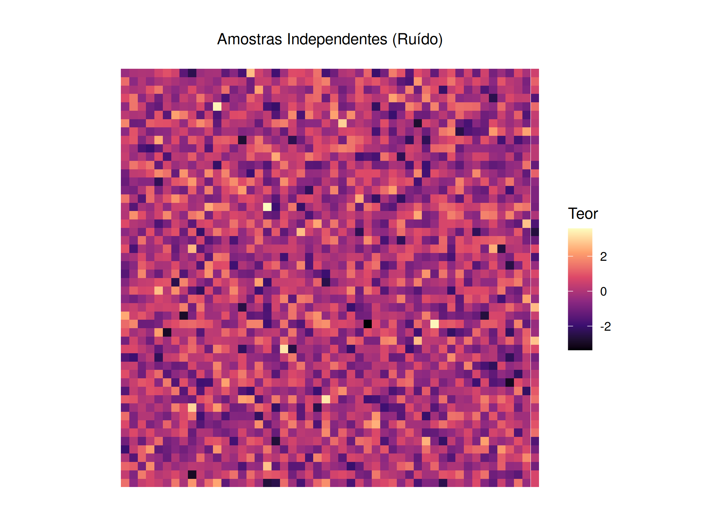
(a) Estatística Clássica
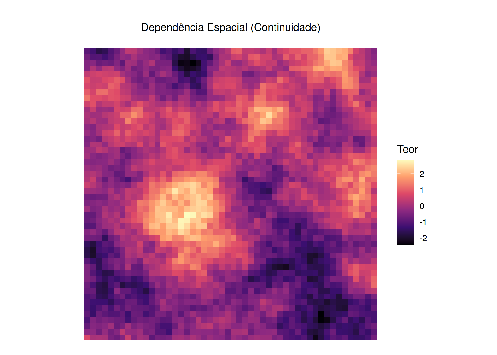
(b) Geoestatística
Figura 3.1: Intuição de Krige: A diferença entre Ruído Branco (Independente) e Continuidade Espacial (Estruturado).
3.1 Variável Regionalizada e o Processo Estocástico
Para operar matematicamente sobre um fenômeno natural único, utilizamos o conceito de Variável Regionalizada. É crucial estabelecer uma distinção notacional usada aqui: denotamos por \(y(\mathbf{s})\) o valor numérico observado do fenômeno no local \(\mathbf{s}\) (a realização concreta, com letra minúscula), e por \(Y(\mathbf{s})\) a variável aleatória no local \(\mathbf{s}\) (o processo probabilístico antes da observação, com letra maiúscula). Embora na realidade \(y(\mathbf{s})\) seja único e fixo, a geoestatística modela-o como uma realização de um Processo Estocástico (ou Função Aleatória/Campo Aleatório) \(Y(\mathbf{s})\).
Variável Regionalizada
Uma variável regionalizada é uma função numérica \(f(\mathbf{s})\) que descreve a distribuição espacial de uma grandeza física (ex: teor de ouro, pH do solo) num domínio \(D^{G}\). Esta função possui propriedades duais: um aspeto estruturado (refletindo tendências geológicas ou climáticas de larga escala) e um aspeto aleatório (refletindo irregularidades locais imprevisíveis) (George Matheron 1971). Matematicamente, tratamos estas variáveis regionalizadas como realizações de um processo estocástico (ou campo aleatório) \(\{Y(s) : s \in D^{G}\}\), onde \(s\) denota um vetor de coordenadas em um domínio espacial \(D^G \subseteq \mathbb{R}^d\) (geralmente \(d=2\) ou \(3\)) (Cressie 1991)
Processo Estocástico
Um processo estocástico espacial é definido como uma coleção de variáveis aleatórias \(\{Y(\mathbf{s}) : \mathbf{s} \in D^{G}\}\), onde \(D^{G} \subseteq D \subseteq \mathbb{R}^d\) é um conjunto de índices contínuo (uma área ou volume) com medida de Lebesgue positiva (área \(>0\)) (Cressie 1993). O objetivo da inferência geoestatística é reconstruir a lei de probabilidade do processo \(Y(\mathbf{s})\) a partir de um conjunto finito de observações \(\{y(\mathbf{s}_1), \dots, y(\mathbf{s}_n)\}\).
Ao contrário da análise de séries temporais, onde o índice \(t\) possui uma ordenação natural (passado \(\to\) futuro), o índice espacial \(s\) não possui uma ordenação única em \(\mathbb{R}^d\) para \(d \ge 2\), o que introduz complexidades adicionais na modelação da dependência multidirecional (Cressie e Moores 2022).
Para tornar o processo estocástico tratável, decompomos a variável aleatória \(Y(\mathbf{s})\) em componentes que explicam diferentes escalas de variação. Existem duas formulações principais: a decomposição simples e a decomposição estrutural completa.
Na decomposição simples assumimos que o processo estocástico é constituído por uma média determinística e um erro correlacionado:
Onde \(\mu(\mathbf{s}) \equiv E[Y(\mathbf{s})]\) representa a tendência de larga escala (Trend ou Drift), isto é, variação sistemática do fenômeno sobre o domínio \(DĜ\). Assume-se frequentemente que \(\mu(\mathbf{s})\) é uma função suave das coordenadas ou uma combinação linear de covariáveis externas \(X(\mathbf{s})\), tal que \(\mu(\mathbf{s}) = \mathbf{x}(\mathbf{s})^\top \boldsymbol{\beta}\)(Cressie e Moores 2022). \(\delta(\mathbf{s})\): Representa a variação de pequena escala ou o erro estocástico. Assume-se que este termo tem média zero, \(E[\delta(\mathbf{s})] = 0\), e captura a dependência espacial estatística (correlação) entre locais vizinhos.
A formulação usada na Eq. 3.1 é insuficiente pois não distingue entre a variabilidade natural do fenômeno e o erro humano. Cressie (1991) e Diggle, Tawn, e Moyeed (1998), sugerem expandir o termo de erro (\(\delta(\mathbf{s})\):
\(\mu(\mathbf{s})\) continua sendo componente determinística. Podendo ser modelada como uma constante, \(\mu(\mathbf{s})=\mu\) (Krigagem simples e ordinária), um polinómio das coordenadas, \(Y(s) =\beta_0 + \beta_1 s_x + \beta_2 s_y\), (Krigagem Universal) ou função de covariáveis externas, como elevação (Krigagem com Deriva Externa) (Wackernagel 2003). Captura forçantes globais (ex: o gradiente de temperatura causado pela latitude).
\(W(\mathbf{s})\)) é o componente estocástico de interesse principal. É um processo estocástico com média zero e continuidade em média quadrática (\(L_2\)-contínuo). \(E[(W(\mathbf{s+h}) - W(\mathbf{s}))^2] \to 0\) quando \(\|\mathbf{h}\| \to 0\). Este componente captura a estrutura de dependência espacial observável na escala da amostragem. Em abordagens modernas de baixo posto este termo é frequentemente modelado por uma expansão de funções de base, \(W(\mathbf{s}) \approx \sum \alpha_j \phi_j(\mathbf{s})\) (sugestão de leitura (Cressie, Sainsbury-Dale, e Zammit-Mangion 2022) ).
\(\eta(\mathbf{s})\)) representa a variabilidade do fenômeno que ocorre a distâncias menores do que a menor distância de separação entre as observações disponíveis (\(\min \|\mathbf{s}_i - \mathbf{s}_j\|\)). É uma variação intrínseca e física do fenômeno, não um erro. No entanto, dado que não temos dados suficientes para resolver esta continuidade, modelamo-la estatisticamente como um ruído branco espacialmente não correlacionado na escala de observação. Exemplo: Se medirmos o teor de ouro a cada 10 metros, a variação extrema que ocorre dentro de uma pepita de 1 cm é classificada como variação de microescala (\(\eta\)).
Conforme descrito por Diggle, Tawn, e Moyeed (1998) referem-se a componentes similares num contexto de modelos lineares generalizados mistos, onde a heterogeneidade latente de pequena escala deve ser contabilizada.
\(\epsilon(\mathbf{s})\) é ruído branco puro (\(\epsilon \overset{iid}{\sim} N[0, \text{Var}(\epsilon(\mathbf{s}))]\)), introduzido pelo processo de observação (precisão do instrumento, erro de laboratório, erro de localização). É puramente aleatório e não tem realidade no fenômeno natural \(S(\mathbf{s})\) que estamos a tentar estudar.
A soma das variâncias dos dois últimos componentes (\(\eta (s)\) e \(\epsilon (s)\)) constitui o que chamamos de Efeito Pepita (\(c_0\)), visível no variograma experimental (assunto da próxima seção) como uma descontinuidade na origem (\(\gamma(h) \to c_0\) quando \(h \to 0\)):
Código
if (!require("pacman")) install.packages("pacman")pacman::p_load(ggplot2, viridis)grid_df$tendencia <- (grid_df$x + grid_df$y) /20grid_df$residuo <- grid_df$geogrid_df$Y <- grid_df$tendencia + grid_df$residuotema_comum <-list(geom_tile(),scale_fill_viridis_c(option ="C",guide =guide_colorbar(barheight =unit(0.8, "npc"), barwidth =unit(0.7, "cm"), title.position ="top", frame.colour ="black", ticks.colour ="black" ) ),coord_fixed(),theme_void(),theme(legend.title =element_text(size =10, vjust =1),legend.margin =margin(l =5, r =5) ))p1 <-ggplot(grid_df, aes(x, y, fill = Y)) + tema_comum +labs(fill ="Valor")p2 <-ggplot(grid_df, aes(x, y, fill = tendencia)) + tema_comum +labs(fill ="Valor")p3 <-ggplot(grid_df, aes(x, y, fill = residuo)) + tema_comum +labs(fill ="Valor")p1;p2;p3
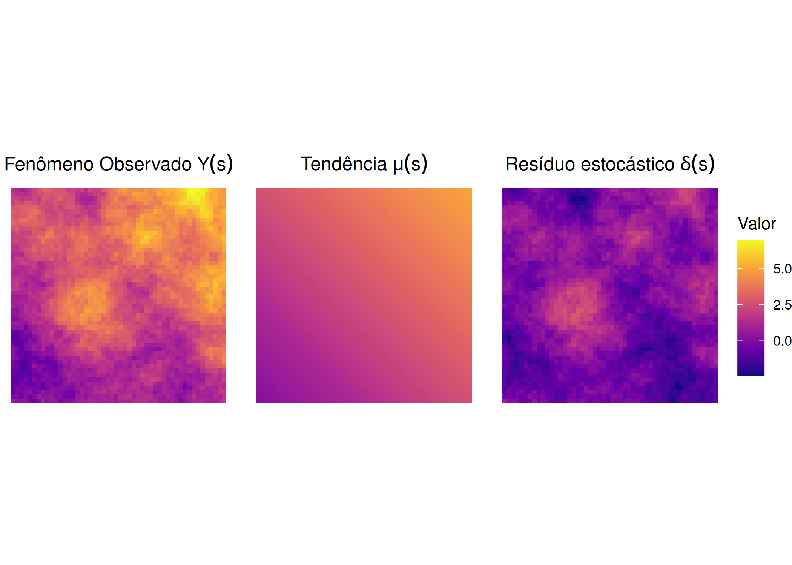
(a) Fenômeno observado: \(Y(s)\)
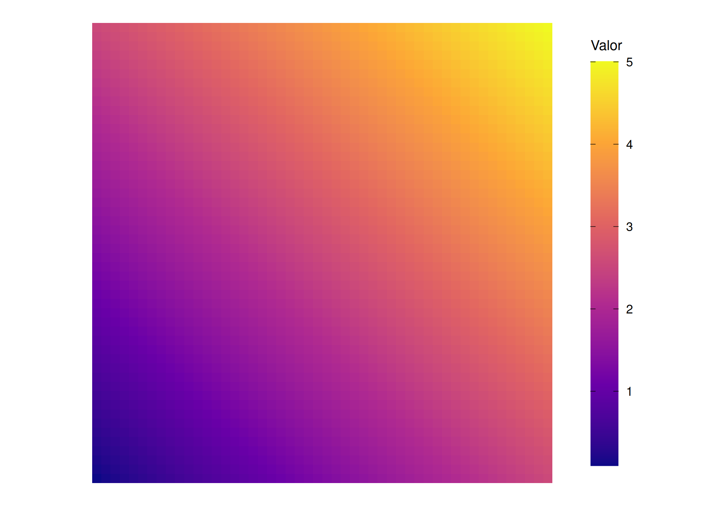
(b) Tendência global: \(\mu(s)\)
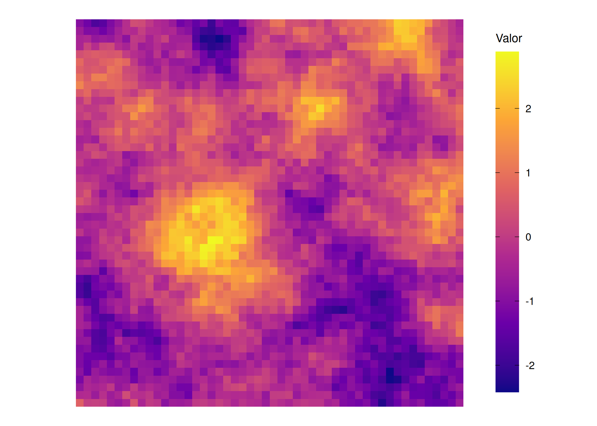
(c) Resíduo estocástico: \(\delta(s)\)
Figura 3.2: Decomposição de uma variável regionalizada: Tendência global + resíduo estocástico.
3.2 Estacionariedade e Inferência Estatística
O obstáculo central na inferência espacial é a unicidade da realização: na prática, possuímos apenas um único conjunto de dados observados \(\{y(\mathbf{s}) : \mathbf{s} \in D\}\), que constitui apenas uma das infinitas realizações possíveis do processo estocástico gerador \(\{Y(\mathbf{s})\}\). Diferentemente de experiências laboratoriais controladas, não é possível replicar o processo geológico ou climático sob as mesmas condições para gerar múltiplas realizações e, assim, estimar a função de distribuição conjunta para qualquer conjunto finito de \(k\) localizações: \[F(y_1, \dots, y_k; \mathbf{s}_1, \dots, \mathbf{s}_k) = P\left(Y(\mathbf{s}_1) \le y_1, \dots, Y(\mathbf{s}_k) \le y_k\right),\]
Nem tão-pouco é possível calcular empiricamente os seus momentos de primeira \(\mu(\mathbf{s})\), \[\mu(\mathbf{s}) = E[Y(\mathbf{s})] = \int_{-\infty}^{+\infty} y \cdot f(y; \mathbf{s}) \, dy\:, \] e segunda ordem \(\sigma^2(\mathbf{s})\), \[\sigma^2(\mathbf{s}) = \text{Var}(Y(\mathbf{s})) = E\left[(Y(\mathbf{s}) - \mu(\mathbf{s}))^2\right], \] em cada local \(\mathbf{s}\)(Cressie 1993).
Para viabilizar a inferência estatística (i.e., estimar os parâmetros do processo a partir de uma única realização), é imperativo invocar a hipótese de estacionariedade. Este conceito assume a invariância das propriedades estatísticas (momentos da distribuição) do processo sob translação no domínio espacial \(D^G\)Seção 2.3. Sob esta premissa, assumimos que a estrutura de dependência é homogénea em todo o domínio, o que nos permite utilizar repetições espaciais, diferentes pares de pontos separados pelo mesmo vetor \(\mathbf{h}\) em locais distintos, como substitutos válidos para as inexistentes repetições estocásticas. Este procedimento fundamenta-se na hipótese de ergodicidade, que estabelece a condição necessária para estimar parâmetros probabilísticos a partir de uma única realização observada. Sob condições específicas de mistura (onde a correlação espacial decai suficientemente rápido com a distância), a ergodicidade garante que as médias espaciais calculadas sobre o domínio \(D^G\) convirjam para a esperança matemática (média populacional) à medida que o volume ou área do domínio de observação cresce indefinidamente (\(|D^G| \to \infty\)) (Cressie 1993). Esta convergência, é em média quadrática (ou convergência em \(L^2\)). Seja \(\bar{Y}_D\) a média espacial (se existir) do processo no domínio \(D\), definida como \(\bar{Y}_{D^G} = \frac{1}{|D|} \int_{D^G} Y(\mathbf{s}) d\mathbf{s}\). A propriedade ergódica assegura que o erro quadrático médio entre a média espacial e a média teórica \(\mu\) tende para zero:
\[\lim_{|D^G| \to \infty} E\left[ \left( \bar{Y}_{D^G} - \mu \right)^2 \right] = 0 , \Longleftrightarrow \bar{Y}_{D^G} \xrightarrow{L^2} \mu\] Esta convergência implica que a variância da média espacial diminui assintoticamente, permitindo que as estatísticas calculadas sobre uma única realização extensa sejam estimadores consistentes dos momentos do processo estocástico gerador (George Matheron 1971; Cressie 1989).
Conforme descrito na Seção 2.3 existem dois níveis principais de estacionariedade utilizados na modelação geoestatística:
A estacionaridade mais comum em análise de séries temporais e estatística espacial é a estacionariedade de segunda ordem (ou fraca). Um processo estocástico \(\{Y(\mathbf{s})\}\) diz-se estacionário de segunda ordem se satisfizer duas condições simultâneas:
A esperança matemática deve ser constante e finita em todo o domínio \(D^G\), independentemente da localização \(\mathbf{s}\). O parâmetro \(\mu\) representa o nível global em torno do qual o processo flutua:
A covariância entre dois pontos não depende das suas localizações absolutas \(\mathbf{s}\) e \(\mathbf{s}+\mathbf{h}\), mas apenas do vetor de separação \(\mathbf{h}\) (que define a distância e a direção entre eles):
onde \(C(\mathbf{h})\) denota a função de covariância. Esta definição implica necessariamente que a variância do processo é finita e constante, dada por \(Var(Y(\mathbf{s})) = C(\mathbf{0}) < \infty\).
Uma consequência analítica imediata da definição acima (Eq. 3.3) é a estabilidade da variância. Se considerarmos o caso particular onde o vetor de separação é nulo (\(\mathbf{h} = \mathbf{0}\)), a covariância de um ponto com ele próprio torna-se, por definição, a sua variância. Como \(C(\mathbf{h})\) não depende da localização \(\mathbf{s}\), segue-se que \(C(\mathbf{0})\) também não depende.
Portanto, a variância do processo é finita e constante em todo o domínio (propriedade de homocedasticidade espacial), sendo definida por:
Esta relação (\(C(\mathbf{0}) = \sigma^2\)) estabelece que o “patamar” máximo de variabilidade do processo é fixo e conhecido a priori. Se a variabilidade do fenômeno crescer indefinidamente com a área (como na topografia de uma cadeia montanhosa), a condição \(C(\mathbf{0}) < \infty\) é violada, e a estacionariedade de segunda ordem não pode ser assumida, exigindo a adoção da hipótese intrínseca.
Muitos fenômenos naturais, como a dispersão de poluentes ou a topografia, apresentam uma variabilidade que cresce sem limites à medida que a área de estudo aumenta, violando a condição de variância a priori finita. Para acomodar estes processos, G. Matheron (1963) introduziu uma condição mais fraca e generalista: a estacionariedade intrínseca. Esta hipótese exige apenas a estacionariedade dos incrementos do processo \(Y(\mathbf{s}+\mathbf{h}) - Y(\mathbf{s})\), definindo-se pelas seguintes propriedades:
A formulação intrínseca é vantajosa pois abrange uma classe mais ampla de processos estocásticos, incluindo aqueles com variância infinita (como o movimento Browniano), onde a função de covariância \(C(\mathbf{h})\) não estaria definida, mas o variograma está perfeitamente caracterizado.
A função \(2\gamma(\mathbf{h})\) é definida formalmente como o variograma, e \(\gamma(\mathbf{h})\) como o semivariograma.
Partindo da definição do variograma \(\gamma(\mathbf{h})\) como a variância do incremento, o desenvolvimento segue:
A relação entre estas duas abordagens é hierárquica. Se um processo for estacionário de segunda ordem, ele é necessariamente intrínseco, existindo uma relação analítica direta que conecta o semivariograma \(\gamma(\mathbf{h})\) à função de covariância Eq. 3.5. Esta equação revela que o semivariograma é a imagem espelhada da covariância: enquanto a covariância \(C(\mathbf{h})\) decresce com a distância (de \(\sigma^2\) para assintoticamente 0), o semivariograma \(\gamma(\mathbf{h})\) cresce com a distância (de 0 para um patamar \(\sigma^2\)). No entanto, a formulação intrínseca é mais robusta, pois o variograma \(2\gamma(\mathbf{h})\) permanece definido mesmo para processos com variância infinita onde a covariância \(C(\mathbf{h})\) não existe, o que justifica a preferência de Matheron pelo variograma como ferramenta fundamental de análise estrutural Figura 3.3 .
Figura 3.3: Covariância vs. Semivariograma em Processo Estacionário.
3.3 Efeito Pepita e suas Implicações na Predição
A caracterização da continuidade espacial de um fenômeno é frequentemente realizada através do variograma experimental (ver secção seguinte). Em muitos casos, observa-se que, à medida que a distância de separação (\(\|\mathbf{h}\|\)) entre dois pontos tende a zero, o valor do semivariograma (\(\gamma(\mathbf{h})\)) não converge para zero, mas sim para um valor positivo. Esta descontinuidade na origem é denominada Efeito Pepita (\(c_0\) ou nugget effect). O termo Efeito Pepita (ou Nugget Effect) tem origem histórica nas minas de ouro sul-africanas. Matheron observou que, mesmo quando duas amostras eram recolhidas muito próximas uma da outra, os seus valores podiam diferir devido à presença de pepitas, microscópicas de ouro distribuídas aleatoriamente.
Cressie (1993) define este parâmetro como a soma das variâncias das duas componentes descritas acima:
Consequentemente, os dados observados são compostos pelo sinal mais o erro de medição: \(Y(\mathbf{s}) = S(\mathbf{s}) + \epsilon(\mathbf{s})\). Esta formulação alinha-se com a Geoestatística Baseada em Modelos (Diggle, Tawn, e Moyeed 1998), que assume uma hierarquia:
Modelo de Processo: \([S(\cdot)]\) (descreve a física do fenômeno).
Modelo de Dados: \([Y(\cdot) | S(\cdot)]\) (descreve a observação ruidosa desse fenômeno).
Cressie (1993) e Laslett (1994) destacam uma implicação fundamental desta decomposição. As equações de predição (Krigagem) devem ser ajustadas dependendo do nosso objetivo final:
Predição do dado observável (\(Y\)): Se o objetivo é prever o valor que um sensor mediria no local \(\mathbf{s}_0\) (incluindo o erro inerente ao sensor), utilizamos a Krigagem Exata. Este interpolador respeita os dados originais e incorpora todo o \(c_0\) na variabilidade estimada.
Predição do processo latente (\(S\)): Se o objetivo é prever o valor físico real do fenômeno, filtrado do ruído instrumental, utilizamos a Krigagem com Suavização. Isto é feito subtraindo a variância do erro de medição (\(\text{Var}(\epsilon)\)) da diagonal da matriz de covariância do sistema de krigagem.
Se ignorarmos esta distinção e tratarmos todo o efeito pepita como variabilidade natural (assumindo \(\text{Var}(\epsilon)=0\)), os nossos mapas serão desnecessariamente ruidosos (“rugosos”) e respeitarão erros de medição como se fossem verdades. Por outro lado, se tratarmos todo o pepita como erro, obteremos mapas mais suaves.
ImportanteO problema da identificabilidade
É importante notar que, sem medições repetidas no mesmo local (co-localizadas), é impossível separar estatisticamente o quanto do \(c_0\) se deve a \(\eta(s)\) (microescala) e o quanto se deve a \(\epsilon (s)\) (erro). Cressie (1993) alerta que esta distinção é frequentemente uma escolha de modelagem baseada no conhecimento do equipamento, e não uma inferência puramente estatística.
NotaTendência e erro
Wackernagel (2003) demonstra que, em domínios pequenos, uma tendência local pode ser indistinguível de uma flutuação estocástica de baixa frequência: A estrutura determinística média de uma pessoa pode ser a estrutura de erro correlacionado de outra.
3.4 Variograma e funções de covariância
Uma vez assumida a hipótese de estacionariedade, a inferência geoestatística exige a quantificação da dependência espacial do processo estocástico \(Y(\mathbf{s})\). Diferentemente da estatística clássica, onde a correlação é frequentemente um escalar único, na geoestatística a dependência é modelada como uma função contínua do vetor de separação \(\mathbf{h} \in \mathbb{R}^d\) entre pares de pontos.
A caracterização desta estrutura é realizada através de duas ferramentas fundamentais, cuja aplicabilidade depende do nível de estacionariedade assumido: a Função de Covariância (Estacionariedade de 2.ª Ordem) e o Variograma (Estacionariedade Intrínseca).
Função de Covariância
A função de covariância \(C(\mathbf{h})\) quantifica a covariância linear entre os valores do processo estocástico \(Y(\mathbf{s})\) em dois locais \(\mathbf{s}\) e \(\mathbf{s} + \mathbf{h}\), separados por um vetor de distância \(\mathbf{h} \in \mathbb{R}^d\):
onde \(\mu\) é a média estacionária do processo Cressie (1993). Sob a hipótese de estacionariedade de segunda ordem, a covariância depende apenas de \(\mathbf{h}\) e é simétrica em relação à origem, ou seja, \(C(\mathbf{h}) = C(-\mathbf{h})\).
Como descrito anteriormente, uma consequência fundamental desta definição é que a covariância na origem, \(C(\mathbf{0})\), corresponde à variância a priori do processo, \(\sigma^2_Y\), que se assume finita e constante em todo o domínio \(D^G\), \(C(\mathbf{0}) = \text{Var}(Y(\mathbf{s})) = \sigma^2_Y\).
Para garantir a validade estatística das predições (Krigagem), a função de covariância deve ser positiva definida, o que implica que a variância de qualquer combinação linear das variáveis aleatórias seja não negativa (George Matheron 1971).
Variograma
Em situações nas quais a variância do processo não é finita, a função de covariância não pode ser definida (por exemplo: movimento Browniano, topografia em grandes escalas, etc.). Esta condição de não-finitude, central na formulação da hipótese intrínseca por George Matheron (1971), não implica que um valor pontual seja infinito, mas sim que a dispersão a priori do processo cresce indefinidamente à medida que o domínio de observação se expande (\(|D| \to \infty\)). Um exemplo clássico é o movimento Browniano unidimensional (processo de Wiener), denotado por \(Y(t)\), em que a variância da posição da partícula no instante \(t\) é linearmente proporcional ao tempo decorrido, expressa por \(\text{Var}(Y(t)) = \sigma^2 t\). Consequentemente, num domínio temporal ilimitado (\(t \to \infty\)), a variância global do processo tende ao infinito (\(\sigma^2_{global} \to \infty\)), tornando matematicamente impossível a definição de um patamar \(C(0)\) ou de uma função de covariância estacionária.
Nesses casos, onde a estacionariedade de segunda ordem é violada pela ausência de variância finita, utiliza-se o variograma \(2\gamma(\mathbf{h})\). Essa ferramenta baseia-se na hipótese de estacionaridade intrínseca introduzida por G. Matheron (1963), assumindo estacionariedade apenas para os incrementos do processo. Isto implica que os incrementos permanecem finitos e estáveis, mesmo quando a variância absoluta diverge. O variograma é definido como a variância da diferença entre os valores da variável em dois locais separados por um vetor \(\mathbf{h}\) e, assumindo que a média dos incrementos é zero, equivale ao valor esperado do quadrado dessas diferenças:
O semivariograma \(\gamma(\mathbf{h})\) corresponde à metade do variograma. Sob a hipótese intrínseca, assume-se que o variograma depende apenas do vetor de separação \(\mathbf{h}\), garantindo a caracterização da continuidade espacial mesmo sem variância global definida. Contudo, se o processo satisfizer a estacionariedade de segunda ordem (onde \(C(\mathbf{0})\) existe e é finito), estabelece-se uma relação analítica direta entre o variograma e a função de covariância (ver a dedução na Eq. 3.4).
Elementos do Semivariograma
Antes de procedermos à modelagem teórica, é crucial compreender os parâmetros que constituem o perfil de um variograma pois a correta identificação destes parâmetros condiciona diretamente a estrutura de covariância utilizada na predição espacial (Yamamoto e Landim 2013).
Alcance (\(a\) ou Range)
O alcance define o limite da dependência espacial. É a distância no eixo das abcissas (\(\|\mathbf{h}\|\)) a partir da qual a correlação entre observações se torna desprezível e o variograma estabiliza. Em termos práticos, pontos separados por uma distância \(\|\mathbf{h}\| \ge a\) são considerados estatisticamente independentes (ou não correlacionados). Este parâmetro impõe o critério crítico para a amostragem: para capturar a estrutura do fenômeno, a malha de amostragem deve possuir um espaçamento inferior ao alcance. Caso contrário, qualquer interpolação entre os pontos será meramente especulativa, uma vez que, além desta fronteira, a predição reverte estatisticamente para a média global do processo.
Efeito Pepita (\(C_0\) ou Nugget Effect)
Teoricamente, pela definição de variância de um incremento nulo, \(\gamma(\mathbf{0}) = 0\). Contudo, o variograma experimental frequentemente exibe uma descontinuidade na origem, intercetando o eixo das ordenadas num valor positivo \(C_0 > 0\). Como descrito na secção Seção 3.3, Cressie (1993) e Diggle, Tawn, e Moyeed (1998) decompõem este parâmetro na soma de duas fontes de variabilidade que operam em escalas sub-amostrais: a variabilidade de microescala e o erro de medição (\(C_0 =\text{Var}(\eta(\mathbf{s})) + \text{Var}(\epsilon(\mathbf{s}))\)). Embora seja um parâmetro a modelar, é desejável que a sua magnitude seja reduzida em comparação com a variância total (\(C_0 <C\)), indicando que o ruído não domina o sinal espacial.
Contribuição (\(C\) ou Partial Sill)
A Contribuição representa a componente da variância que é explicitamente explicada pela estrutura de dependência espacial. Corresponde à amplitude do crescimento do variograma, ou seja, a diferença entre o valor onde a função estabiliza e o ponto onde intercepta o eixo \(Y\) (Efeito Pepita). É neste segmento da curva que reside a informação espacial útil para a krigagem: quanto maior for o valor de \(C\) em relação a \(C_0\), mais forte e contínuo é o padrão espacial do fenômeno.
Patamar (\(C_0 + C\) ou Sill)
O Patamar é o valor assintótico onde a função \(\gamma(\mathbf{h})\) estabiliza. Sob a hipótese de estacionariedade de segunda ordem, este valor corresponde teoricamente à variância total a priori do processo (\(\sigma^2 = C(\mathbf{0})\)). Existe uma relação analítica de aditividade que conecta os elementos de variância descritos acima:
Se o variograma não estabilizar num patamar e continuar a crescer indefinidamente, isso indica que o processo não possui variância finita (é intrínseco) ou que existe uma tendência (drift) não removida nos dados.
Interpretação Gráfica
Para visualizar estes componentes no gráfico do semivariograma, observa-se o comportamento da curva \(\gamma(\mathbf{h})\) em relação aos eixos cartesianos. O gráfico inicia-se no eixo Y à altura do Efeito Pepita (\(C_0\)). À medida que a distância \(\mathbf{h}\) (eixo X) aumenta, a semivariância cresce com uma amplitude igual à Contribuição (\(C\)). A curva cessa o seu crescimento quando a distância atinge o Alcance (\(a\)), momento em que a função se torna horizontal, fixando-se no valor do Patamar (\(C_0 + C\)). Portanto, a altura total da curva representa a variabilidade total dos dados, a qual é particionada em variabilidade não explicada (pepita) e variabilidade estruturada (contribuição) Figura 3.4.
Nota
Uma discussão aprofundada sobre as implicações do efeito pepita na escolha entre Krigagem Exata e Krigagem com Suavização encontra-se na Seção 3.3.
Código
ggplot(df_vgm, aes(x = Distancia, y = Semivariancia)) +geom_line(color ="black", size =1) +geom_hline(yintercept = sill, linetype ="dashed", color ="black") +geom_vline(xintercept = range_val, linetype ="dotted", color ="black") +geom_hline(yintercept = nugget, linetype ="dashed", color ="black") +annotate("text", x =25, y = sill +0.5, label ="Patamar (Sill)", color ="black") +annotate("text", x = range_val +0.5, y =2, label ="Alcance (Range)", angle =90, color ="black") +geom_point(aes(x =0, y = nugget), color ="red", size =3) +annotate("text", x =1, y = nugget -0.5, label ="Efeito Pepita (C0)", color ="black", hjust =0) +annotate("curve", x =1.5, y = nugget -0.2, xend =0.15, yend = nugget -0.05, arrow =arrow(length =unit(0.2, "cm"), type ="closed"), color ="black", curvature =0.3) +annotate("segment", x =28, xend =28, y = nugget, yend = sill, arrow =arrow(ends ="both", length =unit(0.2, "cm")), color ="black") +annotate("text", x =28.5, y = (nugget + sill)/2-2 , label ="Contribuição (C)", angle =90, color ="black", hjust =0) +scale_y_continuous(limits =c(0, 12), breaks =seq(0, 12, 2)) +scale_x_continuous(expand =c(0, 0), limits =c(0, 30)) +labs(x ="Distância de Separação (h)", y =expression(gamma(h))) +theme_classic()
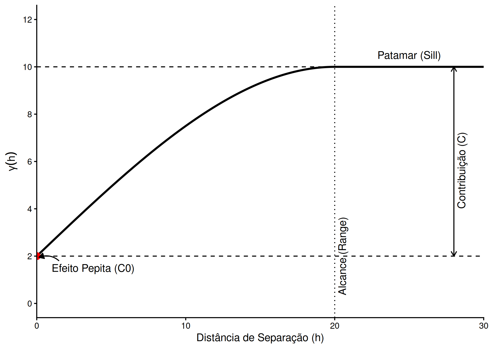
Figura 3.4: Elementos Teóricos do Semivariograma: Alcance, patamar, efeito pepita e contribuição.
3.5 Estimadores do Variograma
A definição teórica do variograma, \(2\gamma(\mathbf{h}) = E[(Y(\mathbf{s}+\mathbf{h}) - Y(\mathbf{s}))^2]\), pressupõe o conhecimento da distribuição de probabilidade conjunta do processo estocástico \(Y(\mathbf{s})\). Contudo, na prática geoestatística, o investigador dispõe apenas de uma única realização finita do processo, materializada num conjunto discreto de observações amostrais \(\mathbf{y} = \{y(\mathbf{s}_1), y(\mathbf{s}_2), \dots, y(\mathbf{s}_n)\}\). Consequentemente, a função teórica \(\gamma(\mathbf{h})\) é desconhecida e deve ser estimada empiricamente a partir destes dados. A qualidade desta estimativa é crítica, uma vez que o variograma experimental constitui a base para o ajuste do modelo teórico que alimentará as equações de krigagem.
Estimador Experimental Clássico (Matheron)
Proposto por G. Matheron (1963), este estimador baseia-se no método dos momentos. Ele calcula a média dos quadrados das diferenças entre pares de pontos separados por um vetor \(\mathbf{h}\) (dentro de uma determinada tolerância de distância e direção). O semivariograma experimental \(\hat{\gamma}_{M}(\mathbf{h})\) é dado por:
Onde \(N(\mathbf{h})\) representa o conjunto de pares de localizações \((\mathbf{s}_i, \mathbf{s}_j)\) tal que a separação \(\mathbf{s}_i - \mathbf{s}_j\) se aproxima do vetor \(\mathbf{h}\), e \(|N(\mathbf{h})|\) denota a cardinalidade (número de pares) desse conjunto.
Estimador Robusto (Cressie-Hawkins)
Embora o estimador clássico Eq. 3.6 seja não-viesado para processos Gaussianos, ele apresenta uma vulnerabilidade intrínseca: a elevação das diferenças ao quadrado, \((y(\mathbf{s}_i) - y(\mathbf{s}_j))^2\), amplifica desproporcionalmente o impacto de valores extremos. A presença de um único outlier ou erro grosseiro na amostragem pode inflar a variância estimada em determinadas classes de distância, distorcendo a estrutura de continuidade espacial e dificultando a modelagem do patamar e do alcance.
Em resposta à sensibilidade do estimador clássico a dados contaminados e a distribuições de cauda longa, Cressie e Hawkins (1980) desenvolveram uma alternativa mais resiliente, conhecida como Estimador Robusto de Cressie-Hawkins. A premissa deste método reside na suavização das diferenças extremas através de uma transformação de raiz quadrada, aproximando a distribuição dos incrementos à normalidade antes do cálculo da média. A expressão para o estimador robusto \(\hat{\gamma}_{CH}(\mathbf{h})\) é definida como:
O denominador na Eq. 3.7 atua como um fator de correção de viés para amostras finitas, garantindo a consistência estatística do estimador. A aplicação comparativa de ambos os estimadores constitui uma prática recomendada na fase de Análise Exploratória de Dados Espaciais (ESDA). Uma divergência significativa entre o perfil do variograma clássico e o do robusto especificamente, se \(\hat{\gamma}_{M}(\mathbf{h})\) apresentar flutuações erráticas ou valores excessivamente elevados nas curtas distâncias em comparação com \(\hat{\gamma}_{CH}(\mathbf{h})\), é um indicador forte da presença de outliers ou de não-normalidade severa nos dados Figura 3.5, sugerindo a necessidade de adoção da abordagem robusta para a modelagem ou verificar possíveis falhas resultantes da ação humana (Cressie 1993) .
Código
if (!require("pacman")) install.packages("pacman")pacman::p_load(ggplot2, gstat, sf, viridis, dplyr)set.seed(123)grid_exemplo <-expand.grid(x =1:50, y =1:50)grid_sf_ex <-st_as_sf(grid_exemplo, coords =c("x", "y"))modelo_verdadeiro <- gstat::vgm(psill =10, model ="Exp", range =15, nugget =2)g_sim <- gstat::gstat(formula = z~1, locations = grid_sf_ex, dummy =TRUE, beta =0, model = modelo_verdadeiro, nmax =20)simulacao <-predict(g_sim, newdata = grid_sf_ex, nsim =1)
[using unconditional Gaussian simulation]
Código
simulacao$z_contaminado <- simulacao$sim1# 2. Introduzindo Outliers (Contaminação)# Adicionamos um erro grosseiro (+50) em apenas 0.2% dos dadosset.seed(999) idx_outliers <-sample(1:nrow(simulacao), 5)simulacao$z_contaminado[idx_outliers] <- simulacao$z_contaminado[idx_outliers] +50#Variogramasvgm_classico <- gstat::variogram(z_contaminado ~1, data = simulacao, cressie =FALSE)vgm_classico$Estimador <-"Clássico (Matheron)"vgm_robusto <- gstat::variogram(z_contaminado ~1, data = simulacao, cressie =TRUE)vgm_robusto$Estimador <-"Robusto (Cressie)"vgm_comp <-rbind(vgm_classico, vgm_robusto)ggplot() +geom_point(data = vgm_comp, aes(x = dist, y = gamma, color = Estimador), size =3, alpha =0.8) +geom_line(data = vgm_comp, aes(x = dist, y = gamma, color = Estimador), linewidth =0.6, alpha =0.6) +stat_function(fun =function(h) 2+10* (1-exp(-h/15)), aes(linetype ="Modelo Verdadeiro (Gerador)"), color ="black", linewidth =1) +scale_color_manual(values =c("Clássico (Matheron)"="#D55E00", "Robusto (Cressie)"="#0072B2")) +scale_linetype_manual(name ="", values =c("Modelo Verdadeiro (Gerador)"="dashed")) +coord_cartesian(ylim =c(0, 25)) +labs(x ="Distância (h)", y =expression(Semivariância ~gamma(h)), color="Estimador:") +theme_minimal() +theme(legend.position ="bottom")
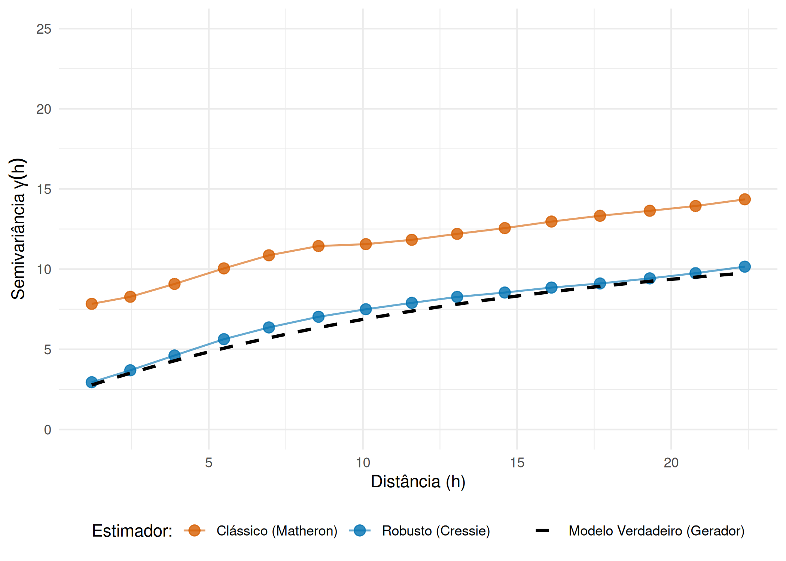
Figura 3.5: Comparação de Robustez: O estimador de Matheron (laranja) é sensível aos outliers, superestimando a variância. O estimador de Cressie (azul) ignora a contaminação e ajusta-se quase perfeitamente ao Modelo Verdadeiro (tracejado).
Na definição teórica, o variograma é uma função contínua calculada para vetores de distância exatos \(\mathbf{h}\). Contudo, a realidade operacional dos levantamentos de campo impõe uma restrição fundamental: as amostras raramente estão dispostas numa grelha regular perfeita. Em dados reais, a probabilidade de encontrar múltiplos pares de pontos separados por uma distância vetorial exata (por exemplo, \(\|\mathbf{h}\| = 10.00\) metros a \(0^\circ\)) é, para todos os efeitos práticos, nula.
Se tentássemos calcular o estimador \(\hat{\gamma}(\mathbf{h})\) exigindo distâncias exatas, obteríamos apenas um par de pontos (ou nenhum) para cada distância única, resultando num gráfico caótico de ruído puro. Para viabilizar a inferência estrutural e garantir robustez estatística, é necessário proceder à regularização dos dados, agrupando os pares de pontos em classes de distância e direção, denominadas Lags (ou passos).
Cada ponto no variograma experimental representa, portanto, não uma distância única, mas a média estatística de todos os pares contidos num intervalo de tolerância \([\mathbf{h} - \epsilon, \mathbf{h} + \epsilon]\). A Figura 3.6 ilustra este processo de agrupamento: em torno de um ponto de referência \(\mathbf{s}_i\) (a vermelho), definem-se anéis concêntricos com uma espessura definida. Todos os vizinhos que caem dentro de um determinado anel (a azul) são considerados como estando aproximadamente à mesma distância, contribuindo conjuntamente para o cálculo da semivariância média daquele lag.
A definição correta da largura do lag e da tolerância angular constitui um compromisso delicado entre resolução e estabilidade:
Intervalos demasiado estreitos: Resultam em classes com poucos pares (\(|N(\mathbf{h})|\) baixo). Como a variância do estimador é inversamente proporcional ao número de pares, isto gera um variograma ruidoso, instável e de difícil interpretação.
Intervalos demasiado largos: Suavizam excessivamente a estrutura espacial. Ao fazer a média de pares muito distantes entre si, mascara-se o comportamento do variograma nas curtas distâncias, o que pode levar a uma estimativa incorreta do Efeito Pepita e da microestrutura do fenômeno.
Andre G. Journel e Huijbregts (1976) propõe, como regra empírica amplamente aceite, que o número de pares por lag não deve ser inferior a 30 para garantir a fiabilidade estatística da estimativa (Teorema do Limite Central). Adicionalmente, recomenda-se que a largura do lag seja coincidente com a distância média entre amostras vizinhas, maximizando assim o aproveitamento da informação disponível.
Código
pacman::p_load(ggplot2,dplyr)set.seed(42)n_points <-60df_points <-data.frame(id =1:n_points,x =runif(n_points, -10, 10),y =runif(n_points, -10, 10))center_pt <-data.frame(x =0, y =0)df_points$dist <-sqrt((df_points$x - center_pt$x)^2+ (df_points$y - center_pt$y)^2)lag_width <-2.5# Largura do Lagn_lags <-3# Número de anéis para desenhardf_points$lag_group <-cut(df_points$dist, breaks =seq(0, 15, by = lag_width),labels =FALSE)target_lag <-2df_points$status <-case_when( df_points$lag_group == target_lag ~"Pares no Lag Alvo",TRUE~"Outros Pares")create_circle <-function(r, center_x=0, center_y=0, npoints=100){ tt <-seq(0, 2*pi, length.out = npoints)data.frame(x = center_x + r *cos(tt), y = center_y + r *sin(tt), r = r)}circles <-do.call(rbind, lapply(seq(lag_width, lag_width*4, by=lag_width), create_circle))radius_inner <- (target_lag -1) * lag_widthradius_outer <- target_lag * lag_widthggplot() +annotate("path", x=circles$x[circles$r==radius_outer], y=circles$y[circles$r==radius_outer], color="gray80") +annotate("path", x=circles$x[circles$r==radius_inner], y=circles$y[circles$r==radius_inner], color="gray80") +geom_path(data = circles, aes(x, y, group = r), color ="black", linetype ="dashed", alpha =0.5) +geom_point(data = df_points, aes(x, y, color = status, shape = status), size =3) +geom_point(data = center_pt, aes(x, y), color ="red", size =5, shape =18) +annotate("text", x =0.5, y =0.5, label ="s_i", color ="red", vjust =-1, fontface="bold") +annotate("text", x =0, y =-lag_width *1.5, label ="Lag 1") +annotate("text", x =0, y =-lag_width *2.5, label =paste("Lag", target_lag, "\n(Intervalo Ativo)")) +annotate("segment", x =0, y = lag_width, xend =0, yend = lag_width *2, arrow =arrow(length =unit(0.2, "cm"), ends ="both")) +annotate("text", x =0.5, y = lag_width *1.5, label ="Largura\ndo Lag", hjust =0, size =3) +scale_color_manual(values =c("Pares no Lag Alvo"="blue", "Outros Pares"="gray70")) +scale_shape_manual(values =c("Pares no Lag Alvo"=19, "Outros Pares"=1)) +coord_fixed(xlim =c(-8, 8), ylim =c(-8, 8)) +theme_void() +labs(color ="Classificação:", shape ="Classificação") +theme(legend.position ="bottom", plot.title =element_text(hjust=0.5), plot.subtitle =element_text(hjust=0.5))
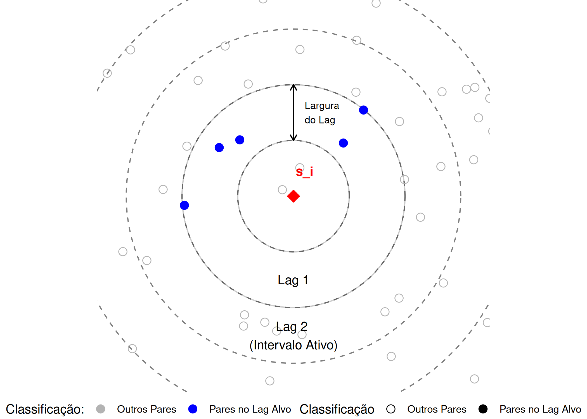
Figura 3.6: Esquematização do cálculo do Variograma Experimental: Os pontos observados (y) não estão a distâncias exatas, pelo que são agrupados em anéis concêntricos (Lags). Todos os pontos na área azul contribuem para o cálculo da variância média daquele Lag específico.
Código
if (!require("pacman")) install.packages("pacman")pacman::p_load(gstat, sf, ggplot2, sp, patchwork)#Carregar dados exemplo (Meuse - metais pesados)data(meuse)# Converter para objeto sfmeuse_sf <-st_as_sf(meuse, coords =c("x", "y"), crs =28992)#Variograma Cloud (Todos os pares de pontos possíveis)# Mostra a dispersão bruta das diferenças ao quadradov_cloud <-variogram(log(zinc) ~1, meuse_sf, cloud =TRUE)p1 <-ggplot(v_cloud, aes(x = dist, y = gamma)) +geom_point(alpha =0.2, size =0.5) +labs(title ="", x ="Distância", y ="Semivariância") +theme_minimal()#Variograma Experimental (Experimental / Binned)# Agrupa a nuvem em lags (classes de distância) para obter a médiav_exp <-variogram(log(zinc) ~1, meuse_sf, cutoff =1500, width =100)p2 <-ggplot(v_exp, aes(x = dist, y = gamma)) +geom_point(size =1, color ="blue") +geom_text(aes(label = np), vjust =-0.5, size =3) +# Número de pareslabs(title ="", subtitle ="Números indicam pares por lag",x ="Distância", y ="Semivariância") +theme_minimal()p1 ; p2
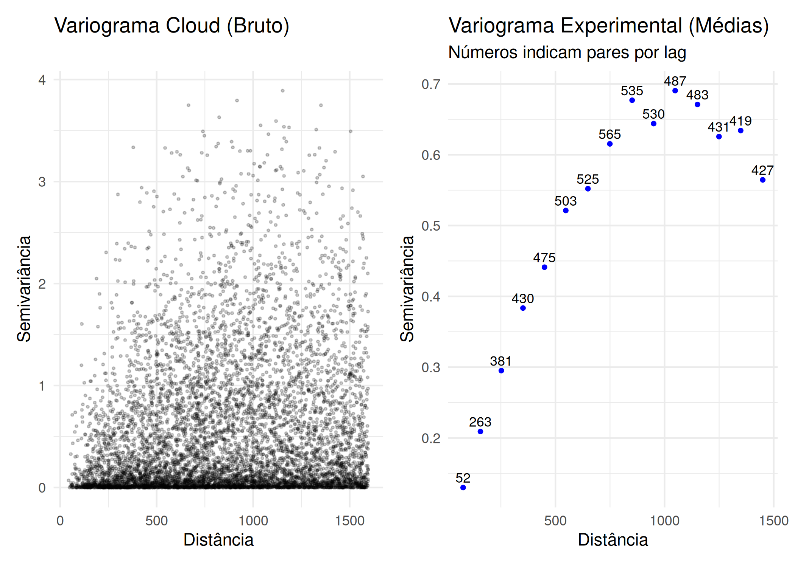
(a) Variograma Cloud (Bruto)
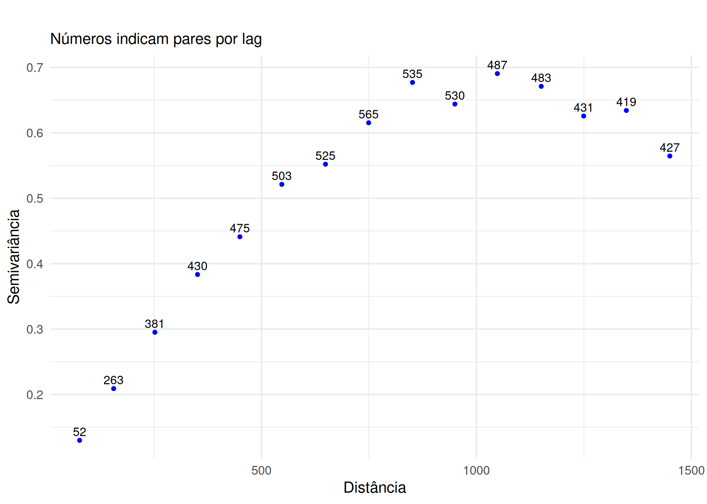
(b) Variograma Experimental (Médias)
Figura 3.7: Cálculo do Variograma Experimental: Nuvem (Cloud) vs. Experimental (Binned)
ImportanteSaiba mais
Para compreender melhor os diferentes tipos de variograma e suas aplicações práticas, recomenda-se a leitura do Capítulo 3 do livro Scalon (2024).
3.6 Modelagem do Variograma
O cálculo do variograma experimental, conforme detalhado na secção anterior, resulta num conjunto discreto de estimativas pontuais \(\hat{\gamma}(\mathbf{h}_k)\) para distâncias de separação específicas. No entanto, o sistema de equações da Krigagem exige o conhecimento do valor da semivariância para qualquer distância contínua \(\mathbf{h}\) dentro do domínio de estudo, e não apenas para os intervalos amostrados. Poder-se-ia intuir que uma simples interpolação linear ou spline entre os pontos experimentais seria suficiente para resolver esta lacuna. Contudo, tal procedimento é inválido e perigoso para a inferência.
Para garantir a existência e unicidade da solução do sistema de Krigagem e, crucialmente, para assegurar que a variância de estimativa calculada seja sempre não-negativa (\(\sigma_E^2 \ge 0\)), a função utilizada para modelar a dependência espacial deve satisfazer a condição de definição condicionalmente negativa (no caso do variograma) ou definição positiva (no caso da covariância) (George Matheron 1971; Cressie 1993). Funções arbitrárias ou interpolações empíricas raramente satisfazem estas desigualdades. Consequentemente, a prática geoestatística impõe a substituição dos pontos experimentais por um modelo teórico paramétrico \(\gamma(\mathbf{h}; \boldsymbol{\theta})\) que seja válido (admissível). O processo de modelagem consiste, portanto, em ajustar uma curva teórica aos dados empíricos, estimando o vetor de parâmetros \(\boldsymbol{\theta} = (C_0, C, a)\) que melhor representa a estrutura de continuidade do fenômeno.
Entre a vasta família de funções admissíveis (Entre a vasta família de funções admissíveis (ver Banerjee, Carlin, e Gelfand (2003), p. 27-28), três modelos isotrópicos destacam-se na literatura aplicada devido à sua interpretabilidade: o modelo Esférico, o Exponencial e o Gaussiano (Wackernagel 2003).
Modelo Esférico
O Modelo Esférico descreve fenômenos com uma transição clara e abrupta entre a dependência espacial e a independência. O seu comportamento caracteriza-se por um crescimento quase linear na origem que se curva progressivamente até atingir o patamar exatamente na distância definida pelo alcance \(a\). Para uma distância escalar \(h = \|\mathbf{h}\|\), é definido por:
\[\gamma(h) = \begin{cases} C_0 + c \left( \frac{3h}{2a} - \frac{1}{2}\left(\frac{h}{a}\right)^3 \right) & \text{se } 0 < h \le a \\ C_0 + c & \text{se } h > a \end{cases} \tag{3.8}\]
Em contraste, muitos fenômenos ambientais, como a dispersão de poluentes ou propriedades do solo, exibem uma continuidade mais suave e persistente, melhor descrita pelo Modelo Exponencial.
Modelo Exponencial
Diferentemente do modelo esférico, o exponencial é assintótico: ele cresce rapidamente na origem mas nunca atinge o patamar, aproximando-se dele indefinidamente. A sua formulação é dada por
\[\gamma(h) = C_0 + C(1 - \exp(-h/a)) \tag{3.9}\]
Devido a esta natureza assintótica, o parâmetro \(a\) a Eq. 3.9 não representa o alcance geométrico onde a correlação se anula, mas sim um parâmetro de escala. Convenciona-se, portanto, definir o Alcance Prático (\(a' \approx 3a\)) como a distância na qual o variograma atinge \(95\%\) do valor do patamar.
Modelo Gaussiano
No extremo da continuidade encontra-se o Modelo Gaussiano, utilizado para representar fenômenos extremamente regulares e infinitamente diferenciáveis. A sua característica distintiva é o comportamento parabólico na origem (\(h^2\)), indicando uma variação muito suave a curtas distâncias. A equação define-se como
com um alcance prático de aproximadamente \(\sqrt{3}a\). Laslett (1994) e Wackernagel (2003) demonstram que a utilização do modelo Gaussiano sem um efeito pepita (\(C_0 = 0\)) pode conduzir a instabilidades numéricas severas na inversão da matriz de krigagem (singularidade) e gerar artefactos irrealistas na predição, devendo a sua aplicação ser sempre acompanhada de uma componente de ruído, ainda que infinitesimal.
Figura 3.8: Comparação dos Modelos Teóricos: O Esférico (linear na origem) atinge o patamar abruptamente. O Exponencial sobe rápido mas estabiliza lentamente (assintótico). O Gaussiano (parabólico na origem) representa fenômenos muito suaves.
Para unificar estas abordagens, Guttorp e Gneiting (2006) defendem que modelos da família Matérn devem ser preferidos devido à sua flexibilidade superior. Enquanto outros modelos impõem uma suavidade fixa ao processo, a família Matérn possui um parâmetro de forma \(\nu\) (suavidade) que permite aos dados ditar o grau de diferenciabilidade do campo aleatório \(Y(\mathbf{s})\).
Como definido anteriormente, para processos estacionários de segunda ordem, o semivariograma relaciona-se diretamente com a função de covariância através de \(\gamma(h) = C(\mathbf{0}) - C(h)\).
A formulação da família Matérn distingue-se pela introdução de um parâmetro adicional que controla a suavidade do processo estocástico, permitindo que o modelo transite entre as formas exponencial e gaussiana de acordo com a evidência dos dados (Sahu 2022).
\(C\) (Contribuição ou Variância Estrutural) representa a parte do patamar explicada pela continuidade espacial. No limite \(h \to \infty\), o termo de correlação anula-se e o semivariograma estabiliza no patamar total \(C_0 + C\).
\(a\) (Alcance) define a escala de distância da dependência. Tal como nos modelos exponencial e gaussiano, este parâmetro dita quão rápido a semivariância cresce em direção ao patamar.
\(\nu\) (Parâmetro de suavidade) dita a diferenciabilidade do campo aleatório \(Y(\mathbf{s})\).
\(K_\nu(\cdot)\) representa a função de Bessel modificada de segunda espécie de ordem \(\nu\), que garante que o modelo seja válido (positivo definido) em espaços multidimensionais.
Figura 3.9: A Família Matérn e a Flexibilidade de Suavidade (nu). O parâmetro nu controla o comportamento na origem: nu=0.5 recupera o modelo Exponencial, enquanto nu elevados aproximam-se do Gaussiano.
A flexibilidade desta família reside no facto de englobar os modelos clássicos como casos particulares. Sahu (2022) destaca que quando \(\nu = 0.5\), a função simplifica-se analiticamente para o modelo exponencial, \(\gamma(d) = C_0 + C(1 - \exp(-h/a))\), descrevendo processos contínuos mas rugosos (não diferenciáveis na origem). À medida que \(\nu \to \infty\), a função converge para o modelo Gaussiano, descrevendo processos infinitamente suaves e diferenciáveis Figura 3.9.
Esta capacidade de transitar entre o rugoso e o suave permite que os próprios dados informem o grau de regularidade do fenômeno, evitando suposições arbitrárias. Além disso, a modelagem respeita a Primeira lei da geografia de Tobler, assegurando que a semivariância cresça monotonicamente com a distância. Para o caso específico de \(\nu = 0.5\), o alcance prático (onde se atinge \(95\%\) do patamar) mantém a relação clássica de \(3a\), facilitando a interpretação dos parâmetros estimados.
3.7 Diagnóstico e Validação
3.7.1 Diagnóstico via Derivada na Origem (Teoria Espectral).
A distinção visual entre modelos teóricos, particularmente entre as famílias Exponencial e Gaussiana (ou Matérn com diferentes parâmetros de suavidade), é frequentemente ambígua na presença de ruído experimental. Gorsich e Genton (2000) propõem uma metodologia objetiva baseada na análise da derivada do variograma na origem, \(\gamma'(0)\), fundamentada na teoria espectral de campos aleatórios.
Pelo Teorema de Bochner, a função de covariância \(C(\mathbf{h})\) de um campo aleatório estacionário e isotrópico em \(\mathbb{R}^d\) possui uma representação espectral dada pela transformada de Hankel da densidade espectral \(f(\omega)\). Para a dimensão \(d=2\), tem-se:
Onde \(J_0(\cdot)\) é a função de Bessel de primeira espécie de ordem zero. Sabemos que o semivariograma se relaciona com a covariância por \(\gamma(h) = C(0) - C(h)\). Consequentemente, a derivada do semivariograma é o simétrico da derivada da covariância: \(\gamma'(h) = -C'(h)\).
A suavidade do processo estocástico (a existência de derivadas em média quadrática do processo \(Y(\mathbf{s})\)) é determinada pela taxa de decaimento da densidade espectral \(f(\omega)\) em altas frequências. Gorsich e Genton (2000) demonstram que o comportamento de \(\gamma'(h)\) quando \(h \to 0\) discrimina classes de diferenciabilidade.
Análise Assintótica dos Modelos
1.Modelo Gaussiano: A função de covariância é dada por \(C(h) = \sigma^2 \exp(-h^2/a^2)\). A expansão de Taylor de segunda ordem em torno de zero é:
O semivariograma correspondente é \(\gamma(h) = \sigma^2 - C(h) \approx \sigma^2 \frac{h^2}{a^2}\). A derivada em relação a \(h\) é: \(\gamma'(h) \approx \frac{2\sigma^2 h}{a^2}\). Tomando o limite na origem: \(\lim_{h \to 0} \gamma'(h) = 0\). Uma derivada nula na origem implica que o processo \(Y(\mathbf{s})\) é infinitamente diferenciável em média quadrática, caracterizando uma estrutura espacial extremamente suave.
Modelo Exponencial: A função de covariância é \(C(h) = \sigma^2 \exp(-h/a)\). A expansão de Taylor de primeira ordem é:
O semivariograma comporta-se como \(\gamma(h) \approx \sigma^2 \frac{h}{a}\). A derivada é: \(\gamma'(h) \approx \frac{\sigma^2}{a}\). Tomando o limite:\(\lim_{h \to 0} \gamma'(h) = \frac{\sigma^2}{a} > 0\). Uma derivada positiva constante na origem indica que o processo é contínuo em média quadrática, mas não diferenciável.
A aplicação prática deste diagnóstico requer o uso de um estimador não-paramétrico para \(\gamma(h)\) (como expansões de Bessel ou splines de suavização) e o cálculo numérico da sua derivada em \(h=0\).
Código
# Permite ver se as curvas de nível formam elipsesplot(variogram(log(zinc) ~1, meuse_sf, map =TRUE, cutoff =1000, width =50),main ="Mapa de Semivariância")#Variogramas Direcionais# alpha = direção (0=Norte, 45=Nordeste, 90=Leste, 135=Sudeste)v_dir <-variogram(log(zinc) ~1, meuse_sf, alpha =c(0, 45, 90, 135))ggplot(v_dir, aes(x = dist, y = gamma, color =factor(dir.hor))) +geom_point() +geom_line(linewidth =0.5) +labs(title ="Variogramas Direcionais",color ="Direção (graus):",x ="Distância",y ="Semivariância" ) +theme_minimal() +theme(legend.position ="bottom")# Nota: Se as curvas divergirem muito em altura (Patamar) = Anisotropia Zonal# Se divergirem no alcance (distância onde estabiliza) = Anisotropia Geométrica
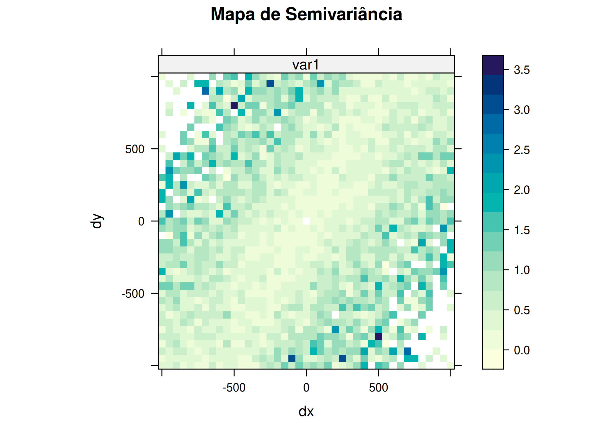
Figura 3.10: Diagnóstico de Anisotropia: (a) mapa de semivariância e (b) variogramas direcionais
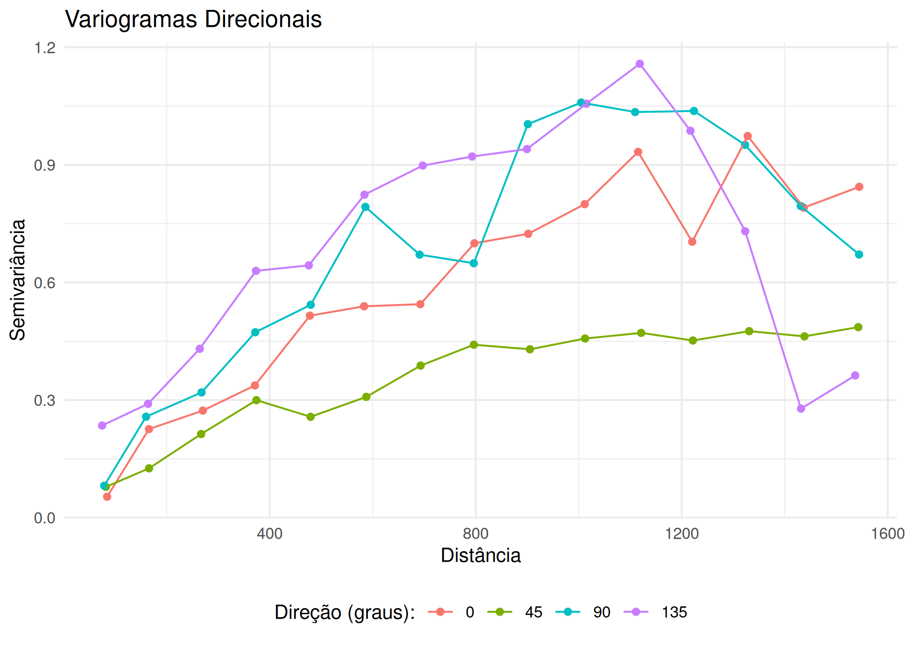
Figura 3.11: Diagnóstico de Anisotropia: (a) mapa de semivariância e (b) variogramas direcionais
3.8 Construção de Modelos Válidos via Médias Móveis
Uma limitação fundamental na modelagem geoestatística é a necessidade de garantir que a função de variograma escolhida seja condicionalmente negativa definida (ou que a covariância seja positiva definida). O uso de funções arbitrárias pode levar a variâncias de krigagem negativas. Em vez de se restringir a uma lista fixa de modelos paramétricos pré-aprovados (como o Esférico ou Exponencial), Ver Hoef e Barry (1998) propõem uma abordagem construtiva baseada em médias móveis (convolução) que garante a validade matemática do modelo a priori.
Assuma-se que o processo espacial \(Y(\mathbf{s})\) é gerado pela suavização (convolução) de um ruído branco subjacente \(W(\mathbf{u})\) através de uma função de ponderação ou kernel \(g(\cdot)\) integrável ao quadrado.
Seja \(W(\mathbf{u})\) um processo de ruído branco em \(\mathbb{R}^d\) tal que \(E[dW(\mathbf{u})] = 0\), \(\text{Var}[dW(\mathbf{u})] = d\mathbf{u}\) (ou seja, \(\text{Cov}(dW(\mathbf{u}), dW(\mathbf{v})) = 0\) se \(\mathbf{u} \neq \mathbf{v}\))
O processo \(Y(\mathbf{s})\) define-se como a integral estocástica:
Uma propriedade fundamental das integrais estocásticas em relação ao ruído branco (Movimento Browniano) é a Isometria de Ito, que estabelece que a variância da integral estocástica é igual à integral do quadrado da função determinística integranda:
\[
2\gamma(\mathbf{h}) = \int_{\mathbb{R}^d} \left[ g(\mathbf{u} - \mathbf{s} - \mathbf{h}) - g(\mathbf{u} - \mathbf{s}) \right]^2 \, d\mathbf{u}
\] Para demonstrar que o variograma depende apenas da separação \(\mathbf{h}\) e não da localização \(\mathbf{s}\), fazemos uma mudança de variável.
Seja \(\mathbf{x} = \mathbf{u} - \mathbf{s}\). Então, \(d\mathbf{x} = d\mathbf{u}\) e os limites de integração (\(\mathbb{R}^d\)) permanecem inalterados.
Esta equação demonstra que o variograma é a autoconvolução da diferença do kernel. A implicação teórica mais poderosa deste resultado é a garantia de validade:
Teorema: Qualquer função \(g(\cdot)\) que seja de quadrado integrável (\(\int g(\mathbf{x})^2 d\mathbf{x} < \infty\)) gera automaticamente um modelo de variograma matematicamente válido (condicionalmente negativo definido). Isto elimina a necessidade de verificar a positividade da matriz de covariância a posteriori.
3.9 Anisotropia
A hipótese de isotropia assume que a estrutura de dependência espacial do processo estocástico \(Y(\mathbf{s})\) depende apenas da distância euclidiana entre os pontos, \(\|\mathbf{h}\|\), e não da direção do vetor de separação \(\mathbf{h}\). Isto implica que as isolinhas (ou isossuperfícies) do variograma \(\gamma(\mathbf{h})\) formam círculos (em \(\mathbb{R}^2\)) ou esferas (em \(\mathbb{R}^3\)).
Contudo, processos físicos geológicos e ambientais raramente são isotrópicos. A sedimentação, o fluxo de águas subterrâneas ou a dispersão eólica de poluentes criam direções preferenciais de continuidade. Quando a variabilidade espacial muda com a direção, o processo é denominado anisotrópico.
A modelagem da anisotropia não requer a criação de novas funções de variograma, mas sim a aplicação de transformações lineares afins sobre o sistema de coordenadas, mapeando o espaço anisotrópico original num espaço isotrópico equivalente. Classificamos a anisotropia em três categorias fundamentais: Geométrica, Zonal e Mista(Yamamoto e Landim 2013).
3.9.1 Anisotropia Geométrica
A anisotropia geométrica ocorre quando o alcance (\(a\)) da dependência espacial varia com a direção, mas o patamar (\(C_0 + C\)) permanece constante em todas as direções. As isolinhas de semivariância formam elipses, cujos eixos principais correspondem às direções de maior e menor continuidade.
Seja \(\gamma_{iso}(h; a)\) um modelo isotrópico com alcance \(a\). Num processo anisotrópico geométrico em \(\mathbb{R}^2\), definimos:
\(a_{max}\): O alcance máximo (direção de maior continuidade).
\(a_{min}\): O alcance mínimo (direção de menor variabilidade).
\(\phi\): O ângulo de azimute da direção de maior continuidade.
A razão de anisotropia é definida como o escalar \(\lambda = a_{max} / a_{min} \ge 1\) (ou o seu inverso, dependendo da convenção de software, aqui usaremos a definição de estiramento).
O objetivo é transformar o vetor de separação original \(\mathbf{h} = [h_x, h_y]^T\) num vetor transformado \(\mathbf{h}'\) tal que a estrutura se torne isotrópica com alcance padronizado (geralmente \(a_{min}\) ou 1). Esta transformação \(\mathbf{h}' = \mathbf{A}\mathbf{h}\) compõe-se de uma rotação e um escalonamento.
Passo 1: Rotação
Alinhamos o sistema de coordenadas com os eixos principais da anisotropia através da matriz de rotação \(\mathbf{R}(\phi)\):
Como \(\mathbf{A}\) é uma matriz não-singular, a transformação é bijectiva. Uma vez que \(\gamma_{iso}\) é uma função condicionalmente negativa definida (CND) em \(\mathbb{R}^d\), a composição \(\gamma_{iso}(\|\mathbf{A}\cdot\|)\) preserva a propriedade CND, garantindo que o modelo anisotrópico é válido para a krigagem (Cressie 1993).
3.9.2 Anisotropia Zonal
A anisotropia zonal ocorre quando o patamar (variância total) varia consoante a direção. Isto é teoricamente problemático para a hipótese de estacionariedade de segunda ordem, pois implica que a covariância na origem \(C(\mathbf{0})\) (a variância do processo) não é única.
Na prática, isto ocorre quando a variabilidade vertical é muito superior à horizontal, de tal forma que o variograma vertical atinge um patamar muito mais alto do que o horizontal, ou o variograma horizontal parece nunca atingir o patamar total do processo.
Para modelar a anisotropia zonal mantendo a validade do modelo, Andre G. Journel e Huijbregts (1976) propõem decompor o processo \(Y(\mathbf{s})\) na soma de processos independentes (estruturas aninhadas), onde alguns componentes atuam apenas em subespaços do domínio.
Seja \(\mathbf{h} = (h_x, h_y, h_z)\). O modelo é construído como:
\(\gamma_{iso}(\|\mathbf{h}\|)\): É uma componente isotrópica (ou geometricamente anisotrópica) que contribui para a variabilidade em todas as direções.
\(\gamma_{zonal}(|h_z|)\): É uma componente que depende apenas da distância vertical \(h_z\).
Na direção vertical (\(h_x=0, h_y=0\)), o vetor é \(\mathbf{h} = (0,0, h_z)\). O variograma total é:
O patamar nesta direção é a soma dos patamares das duas estruturas: \(C_{total} = C_{iso} + C_{zonal}\).
Na direção horizontal (\(h_z=0\)), o vetor é \(\mathbf{h} = (h_x, h_y, 0)\). Como \(\gamma_{zonal}(0) = 0\) (por definição de variograma na origem), a equação reduz-se a:
O patamar aparente na horizontal é apenas \(C_{iso}\).
A componente \(\gamma_{zonal}\) possui um alcance horizontal infinito. Modela-se como uma estrutura cujo alcance no plano \(xy\) tende a \(\infty\), contribuindo para a variância total apenas quando existe separação vertical. Isto reflete a realidade de camadas sedimentares onde a variação litológica é intensa verticalmente, mas as propriedades persistem lateralmente por longas distâncias.
3.9.3 Anisotropia Mista (ou Combinada)
A anisotropia mista é a generalização que permite modelar sistemas complexos onde diferentes escalas de variação possuem diferentes direções de continuidade. Por exemplo, a microvariabilidade (curta distância) pode ser isotrópica, enquanto a tendência regional (longa distância) segue uma direção preferencial.
Assume-se que o processo \(Y(\mathbf{s})\) é a soma de \(K\) componentes ortogonais independentes (escalas espaciais), \(Y(\mathbf{s}) = \sum_{k=1}^K Y_k(\mathbf{s})\).
Pela propriedade de aditividade da variância de variáveis independentes, o variograma total é a soma dos variogramas individuais:
Cada estrutura \(\gamma_k(\mathbf{h})\) pode ter a sua própria definição de anisotropia geométrica, com a sua própria matriz de transformação \(\mathbf{A}_k\). A equação geral para a anisotropia mista é ((Goovaerts 1997)):
\(C_0\) é feito pepita (geralmente isotrópico, pois é ruído); \(C_k\) é contribuição da estrutura \(k\); \(\rho_k(\cdot)\) é função de correlação básica; \(\mathbf{A}_k\) é matriz de transformação específica para a estrutura \(k\).
3.10 Diagnóstico da Anisotropia
A anisotropia em um processo espacial \(Y(\mathbf{s})\) manifesta-se quando a estrutura de dependência espacial varia consoante a direção. Como discutido na Seção 3.9, a modelagem correta da anisotropia é crucial para garantir a precisão da predição espacial (krigagem) e a validade estatística das inferências. O diagnóstico da anisotropia envolve a detecção e a caracterização da dependência direcional, tipicamente através da análise de variogramas direcionais e mapas de variograma.
3.10.1 Variogramas Direcionais
A forma mais comum de diagnosticar a anisotropia é calcular variogramas experimentais \(\hat{\gamma}(\mathbf{h})\) para diferentes direções do vetor de separação \(\mathbf{h}\). Em vez de considerar todas as distâncias omnidirecionais, restringimos o cálculo a pares de pontos cuja separação vetorial cai dentro de setores angulares específicos (Andre G. Journel e Huijbregts 1976; Isaaks, Srivastava, et al. 1989).
Seja \(\theta\) o ângulo de direção (azimute) e \(\Delta\theta\) a tolerância angular (meia-janela). O estimador do variograma direcional para a direção \(\theta\) é dado por:
Onde \(N(h, \theta)\) é o conjunto de pares de locais \((\mathbf{s}_i, \mathbf{s}_j)\) tal que a distância \(\|\mathbf{s}_i - \mathbf{s}_j\| \approx h\) e o ângulo do vetor \(\mathbf{s}_i - \mathbf{s}_j\) está em \([\theta - \Delta\theta, \theta + \Delta\theta]\).
Tipicamente, calculam-se variogramas para quatro direções principais: \(0^\circ\) (Norte-Sul), \(45^\circ\) (Nordeste-Sudoeste), \(90^\circ\) (Leste-Oeste) e \(135^\circ\) (Sudeste-Noroeste) (Scalon 2024). A comparação visual destes variogramas permite identificar o tipo de anisotropia (ver seção Seção 3.9):
Anisotropia Geométrica: Se os variogramas atingem o mesmo patamar (\(C_0 + C\)) mas com alcances diferentes (\(a(\theta)\)), estamos perante uma anisotropia geométrica. O alcance varia com a direção segundo uma elipse.
Anisotropia Zonal: Se os variogramas estabilizam em patamares diferentes dependendo da direção, ou se numa direção específica o variograma não estabiliza (indicando uma tendência), temos anisotropia zonal.
Anisotropia mista se ocorre a anisotropia geometrica e zonal.
Uma ferramenta visual poderosa para detetar anisotropia é o mapa de variograma ou superfície de variograma. Em vez de traçar curvas \(\gamma(h)\) para direções discretas, representamos \(\hat{\gamma}(\mathbf{h})\) como uma superfície em função das coordenadas do vetor de separação \(\mathbf{h} = (h_x, h_y)\)(Goovaerts 1997).
O mapa é construído calculando a semivariância média para células de uma grelha no espaço dos vetores de separação. O centro do mapa corresponde a \(\mathbf{h} = (0,0)\) (semivariância zero). As cores ou curvas de nível representam a magnitude de \(\gamma(\mathbf{h})\).
Isotropia: é o contrario da anisotropia.Aqui, as curvas de nível formam círculos concêntricos em redor da origem.
Anisotropia Geométrica: As curvas de nível formam elipses. O eixo maior da elipse no mapa de variograma corresponde à direção de menor variabilidade (maior continuidade), que é a direção do alcance máximo (\(a_{max}\)). O eixo menor corresponde à direção de maior variabilidade (alcance mínimo \(a_{min}\)).
Anisotropia Zonal: As curvas de nível não fecham ou mostram comportamentos muito distintos em direções ortogonais, indicando diferenças nos patamares.
Para anisotropia geométrica, pode-se ajustar modelos teóricos aos variogramas direcionais experimentais e plotar os alcances estimados \(a(\theta)\) num diagrama polar (Rose Diagram). A forma resultante deve aproximar-se de uma elipse descrita pela equação polar:
Onde \(\phi\) é o ângulo da direção de maior continuidade (eixo maior). Este diagnóstico permite estimar os parâmetros da transformação de coordenadas (rotação \(\phi\) e razão de anisotropia \(\lambda = a_{max}/a_{min}\)) necessários para corrigir a anisotropia e aplicar a krigagem num espaço isotrópico equivalente (Chiles e Delfiner 2012).
3.11 Ajuste de Modelos de semivariograma
A inferência da estrutura de dependência espacial é uma etapa crítica na geoestatística. Dado um conjunto de dados observados \(\mathbf{y} = (y(\mathbf{s}_1), \dots, y(\mathbf{s}_n))^\top\), em locais \(\mathbf{s}_1, \dots, \mathbf{s}_n\), o objetivo é estimar o vetor de parâmetros \(\boldsymbol{\theta}\) (efeito pepita, patamar, alcance, suavidade) de um modelo de variograma teórico \(2\gamma(\mathbf{h}; \boldsymbol{\theta})\) que descreva adequadamente o processo estocástico subjacente.
3.11.1 Mínimos Quadrados Ponderados
O método de mínimos quadrados ordinários é inadequada para o ajuste de variogramas devido à heterocedasticidade intrínseca dos estimadores. Cressie (1985) formalizou a dedução da variância assintótica do estimador de Matheron, justificando a necessidade de pesos.
Assumindo que o campo aleatório \(Y(\mathbf{s})\) é um processo Gaussiano estacionário. Definamos a variável aleatória da diferença entre dois pontos separados pelo vetor \(\mathbf{h}\) como \(D(\mathbf{h}) = Y(\mathbf{s} + \mathbf{h}) - Y(\mathbf{s})\), pela hipótese estacionaridade intrínseca, esta diferença tem média zero e variância definida pelo variograma teórico: \(D(\mathbf{h}) \sim \mathcal{N}(0, 2\gamma(\mathbf{h}))\). O estimador de variograma baseia-se no quadrado desta diferença. Vamos padronizar \(D(\mathbf{h})\) dividindo pelo desvio padrão \(\sqrt{2\gamma(\mathbf{h})}\) para obter uma normal padrão \(Y | X \sim \mathcal{N}(0,1)\):
Sabemos que a variância de uma variável \(\chi^2_1\) é exatamente 2. Usando a propriedade de variância \(\text{Var}(kX) = k^2 \text{Var}(X)\), a variância da diferença quadrática para um único par de pontos é:
O estimador do semivariograma \(\hat{\gamma}(\mathbf{h})\) para um lag \(\mathbf{h}\) é a média de \(N(\mathbf{h})\) diferenças quadráticas, dividida por 2. Assumindo independência aproximada entre os pares (necessário para a derivação dos pesos Cressie (1985)):
Pelo princípio de Aitken, os pesos ótimos são o inverso da variância (\(w_k = 1/\text{Var}_k\)) (McBratney e Webster 1986; Cressie 1985). Ignorando a constante 2 (que não afeta a minimização) temos, \(w_k = \frac{N(\mathbf{h}_k)}{[\gamma(\mathbf{h}_k \boldsymbol{\theta})]^2}\). Substituindo os pesos na soma dos erros quadráticos, obtemos a função a ser minimizada para encontrar \(\boldsymbol{\theta}\):
onde \(K\) é número total de lags (classes de distância) considerados; \(N(\mathbf{h}_k)\) é número de pares de pontos no lag \(k\). \(\hat{\gamma}(\mathbf{h}_k)\) é o valor do semivariograma experimental (observado); \(\gamma(\mathbf{h}_k; \boldsymbol{\theta})\) é o valor do modelo teórico (predito); \([\gamma(\mathbf{h}_k; \boldsymbol{\theta})]^{-2}\) (implícito no denominador) penaliza fortemente erros em distâncias curtas (onde \(\gamma\) é pequeno), garantindo que o modelo se ajuste bem na origem, o que é crucial para a Krigagem.
O método de mínimos quadrados ponderados (WLS) pressupõe que as estimativas do variograma em diferentes lags são estatisticamente independentes (\(\text{Cov}(\hat{\gamma}(\mathbf{h}_i), \hat{\gamma}(\mathbf{h}_j)) = 0\) para \(i \neq j\)). Na realidade, como os mesmos dados espaciais são reutilizados para calcular múltiplos lags, existe uma correlação significativa entre eles. Genton (1998) formalizou o problema como um ajuste de Mínimos Quadrados Generalizados, deduzindo a matriz de covariância completa \(\boldsymbol{\Sigma}_{\hat{\gamma}}\) dos estimadores.
Para deduzir a covariância entre dois estimadores do variograma, reescrevemos primeiro o estimador de Matheron em notação matricial. Seja \(\mathbf{y}\) o vetor de observações e \(\mathbf{A}(\mathbf{h})\) a matriz de incidência espacial para o lag \(\mathbf{h}\) (uma matriz esparsa que seleciona os pares de pontos separados por \(\mathbf{h}\)). O estimador pode ser expresso como uma forma quadrática:
A matriz \(\mathbf{A}(\mathbf{h})\) é definida tal que \(\mathbf{y}^\top \mathbf{A}(\mathbf{h}) \mathbf{y} = \sum_{(\mathbf{s}_i, \mathbf{s}_j) \in N(\mathbf{h})} (y(\mathbf{s}_i) - y(\mathbf{s}_j))^2\).
Para calcular a covariância entre as estimativas em dois lags distintos, \(\mathbf{h}_u\) e \(\mathbf{h}_v\), recorremos a um teorema fundamental para formas quadráticas de vetores Gaussianos. Se \(\mathbf{y} \sim \mathcal{N}(\boldsymbol{\mu}, \boldsymbol{\Sigma}_y)\), então a covariância entre duas formas quadráticas \(\mathbf{y}^\top \mathbf{A} \mathbf{y}\) e \(\mathbf{y}^\top \mathbf{B} \mathbf{y}\) é dada por:
Assumindo um processo de média zero (ou trabalhando com resíduos), o termo da média anula-se. Aplicando este teorema às matrizes de incidência espacial \(\mathbf{A}(\mathbf{h}_u)\) e \(\mathbf{A}(\mathbf{h}_v)\), obtemos a covariância entre os estimadores do variograma (elemento \(uv\) da matriz \(\boldsymbol{\Sigma}_{\hat{\gamma}}\)):
A matriz \(\boldsymbol{\Sigma}_{\hat{\gamma}}\) captura explicitamente a interdependência estatística entre os lags, dependendo tanto da geometria da amostragem (via matrizes \(\mathbf{A}\)) quanto da estrutura de covariância real dos dados (\(\boldsymbol{\Sigma}_y(\boldsymbol{\theta})\)).
A função objetivo a ser minimizada no método GLSE, que leva em conta esta estrutura de correlação completa, é a distância de Mahalanobis entre o vetor de estimativas empíricas \(\hat{\boldsymbol{\gamma}}\) e o vetor do modelo teórico \(\boldsymbol{\gamma}(\boldsymbol{\theta})\):
onde \(\hat{\boldsymbol{\gamma}}\) é o vetor contendo as estimativas \(\hat{\gamma}(\mathbf{h}_k)\) para todos os \(K\) lags; \(\boldsymbol{\gamma}(\boldsymbol{\theta})\) é o vetor correspondente dos valores teóricos; \([\boldsymbol{\Sigma}_{\hat{\gamma}}(\boldsymbol{\theta})]^{-1}\) é a inversa da matriz de covariância dos estimadores, que atua como uma matriz de pesos generalizada, penalizando não apenas a variância (elementos diagonais, como no WLS), mas também a redundância de informação entre lags correlacionados (elementos fora da diagonal). Este método é iterativo, pois a matriz de pesos depende dos próprios parâmetros \(\boldsymbol{\theta}\) que estamos a estimar.
3.12.1 Métodos de Máxima Verossimilhança (ML) e Máxima Verossimilhança Restrita (REML)
Enquanto o método dos Mínimos Quadrados Ponderados (WLS) minimiza a distância entre o variograma experimental e o modelo teórico, os métodos baseados em verossimilhança operam diretamente sobre o vetor de dados observados \(\mathbf{y(s)}\), sem a necessidade de calcular estatísticas intermédias (como a semivariância experimental). Lark (2000) e Diggle, Tawn, e Moyeed (1998) argumentam que esta abordagem é teoricamente mais eficiente, especialmente quando os dados são escassos ou a amostragem é irregular, pois utiliza toda a informação contida na distribuição conjunta dos dados.
Assuma-se que o campo aleatório \(Y(\mathbf{s})\) segue um modelo linear misto, composto por uma tendência determinística (\(\mathbf{X}\boldsymbol{\beta}\) - média ) e um componente estocástico espacialmente correlacionado (\(\boldsymbol{\eta}\)). Seja \(\mathbf{y} = (y(\mathbf{s}_1), \dots, y(\mathbf{s}_n))^\top\) o vetor de observações:
onde \(\mathbf{X}\) é a matriz de desenho (\(n \times p\)) contendo as covariáveis (coordenadas, elevação, etc.); \(\boldsymbol{\beta}\) é o vetor (\(p \times 1\)) de parâmetros de tendência desconhecidos (efeitos fixos) e, \(\boldsymbol{\eta}\) é o vetor de resíduos aleatórios, assumido seguir uma distribuição normal multivariada com média zero e matriz de covariância \(\mathbf{V}(\boldsymbol{\theta})\).
A matriz de covariância \(\mathbf{V}(\boldsymbol{\theta})\) é parametrizada pelo vetor \(\boldsymbol{\theta}\) (alcance, patamar, efeito pepita) que desejamos estimar. O elemento \((i,j)\) desta matriz é dado por:
A função de densidade de probabilidade conjunta para o vetor \(\mathbf{y(s)}\), dado os parâmetros \(\boldsymbol{\beta}\) e \(\boldsymbol{\theta}\), é:
A função de log-verossimilhança (\(L_{ML}\)) é o logaritmo natural desta densidade. Para estimar \(\boldsymbol{\theta}\), primeiro perfilamos a verossimilhança em relação a \(\boldsymbol{\beta}\). O estimador de Máxima Verossimilhança para \(\boldsymbol{\beta}\), fixado \(\boldsymbol{\theta}\), é o estimador de Mínimos Quadrados Generalizados (GLS):
Substituindo \(\hat{\boldsymbol{\beta}}_{GLS}\) na equação da densidade, obtemos a verossimilhança perfilada a ser maximizada em relação a \(\boldsymbol{\theta}\):
Cressie (1993) e Marchant e Lark (2007) destacam que existe uma tendência nos dados (\(\mu(\mathbf{s}) \neq \text{constante}\)), o estimador de Máxima Verossimilhança (ML) subestima a variância e o variograma, pois assume que os parâmetros da tendência (\(\boldsymbol{\beta}\)) são conhecidos, ignorando os graus de liberdade perdidos na sua estimação.
Para corrigir este viés, utiliza-se a Máxima Verossimilhança Restrita (REML).
Seja \(\mathbf{K}\) uma matriz de contrastes de dimensão \(n \times (n-p)\) tal que suas colunas geram o espaço ortogonal ao espaço das colunas de \(\mathbf{X}\).
Definimos o vetor de contrastes de erro transformados como \(\mathbf{w} = \mathbf{K}^\top \mathbf{y}\). A distribuição de \(\mathbf{w}\) depende apenas de \(\boldsymbol{\theta}\) e não de \(\boldsymbol{\beta}\):
A implementação computacional direta desta fórmula é ineficiente devido à necessidade de construir a matriz \(\mathbf{K}\). Contudo, Harville (1977) provou duas identidades algébricas fundamentais que relacionam os componentes da verossimilhança restrita com as matrizes originais:
Ignorando os termos que não dependem de \(\boldsymbol{\theta}\) (\(\mathbf{X}\) e \(\mathbf{K}\) são fixos), o termo relevante é \(\ln|\mathbf{V}| + \ln|\mathbf{X}^\top \mathbf{V}^{-1} \mathbf{X}|\).
Identidade da Forma Quadrática: \(\mathbf{w}^\top (\mathbf{K}^\top \mathbf{V} \mathbf{K})^{-1} \mathbf{w} = (\mathbf{y} - \mathbf{X}\hat{\boldsymbol{\beta}}_{GLS})^\top \mathbf{V}^{-1} (\mathbf{y} - \mathbf{X}\hat{\boldsymbol{\beta}}_{GLS})\)
Isto demonstra que a forma quadrática nos contrastes é equivalente à soma ponderada dos quadrados dos resíduos GLS no espaço original.
Substituindo estas identidades na equação de \(L_R\), obtemos a função objetivo do REML apresentada por Marchant e Lark (2007):
\[
\begin{aligned}
L_{REML}(\boldsymbol{\theta}) \propto -\frac{1}{2} \Bigg( & \underbrace{\ln|\mathbf{V}(\boldsymbol{\theta})|}_{\text{Ajuste da Covariância}} + \underbrace{(\mathbf{y} - \mathbf{X}\hat{\boldsymbol{\beta}}_{GLS})^\top \mathbf{V}(\boldsymbol{\theta})^{-1} (\mathbf{y} - \mathbf{X}\hat{\boldsymbol{\beta}}_{GLS})}_{\text{Ajuste aos Resíduos}} + \underbrace{\ln|\mathbf{X}^\top \mathbf{V}(\boldsymbol{\theta})^{-1} \mathbf{X}|}_{\text{Penalidade de Complexidade}} \Bigg)
\end{aligned}
\tag{3.11}\]
O termo adicional \(\ln|\mathbf{X}^\top \mathbf{V}^{-1} \mathbf{X}|\) atua como uma penalidade. Quanto maior a incerteza na estimação da tendência (refletida na variância do estimador \(\hat{\boldsymbol{\beta}}\), que é proporcional a \((\mathbf{X}^\top \mathbf{V}^{-1} \mathbf{X})^{-1}\)), maior será este termo logarítmico (pois estamos a tomar o log da inversa da variância, ou seja, da precisão/informação). Esta penalidade corrige a subestimação da variância inerente ao método ML, fornecendo estimativas não-viesadas para o variograma.
3.12.2 REML Robusto
O estimador REML padrão assume que os dados seguem uma distribuição Gaussiana. Consequentemente, a função de log-verossimilhança inclui um termo quadrático (a distância de Mahalanobis dos resíduos) que penaliza desvios em relação à média. Na presença de outliers (valores provenientes de um processo de contaminação com caudas pesadas), este termo quadrático cresce rapidamente, dominando a função de verossimilhança e forçando o modelo a inflacionar a variância (efeito pepita ou patamar) para acomodar os dados anómalos.
Marchant e Lark (2007), baseando-se no trabalho de Richardson e Welsh (1995), propõem o REML Robusto, que substitui a norma \(L_2\) (quadrática) por uma função de perda robusta (Huber) aplicada aos resíduos decorrelacionados.
Em dados geoestatísticos, os resíduos não são independentes; são correlacionados pela estrutura espacial \(\mathbf{V}(\boldsymbol{\theta})\). Para aplicar uma função de robustez (que geralmente assume independência), é necessário primeiro decorrelacionar os resíduos. Seja o modelo linear misto \(\mathbf{y} = \mathbf{X}\boldsymbol{\beta} + \boldsymbol{\eta}\), com \(\boldsymbol{\eta} \sim N(\mathbf{0}, \mathbf{V}(\boldsymbol{\theta}))\). Definimos a raiz quadrada inversa da matriz de covariância, \(\mathbf{V}^{-1/2}\), tal que \(\mathbf{V}^{-1/2} \mathbf{V} (\mathbf{V}^{-1/2})^T = \mathbf{I}\).
O vetor de resíduos padronizados e decorrelacionados \(\boldsymbol{\epsilon}^*\) é dado por:
Desta forma, sob a hipótese nula (sem contaminação), \(\boldsymbol{\epsilon}^* \sim N(\mathbf{0}, \mathbf{I})\).
No REML padrão, \(\boldsymbol{\beta}\) é estimado por GLS (\(\hat{\boldsymbol{\beta}}_{GLS}\)), que minimiza a soma dos quadrados de \(\boldsymbol{\epsilon}^*\). No REML Robusto, \(\hat{\boldsymbol{\beta}}_{R}\) é obtido minimizando uma função de perda robusta \(\rho_c\) sobre estes resíduos transformados.
Dado um \(\boldsymbol{\theta}\) fixo, \(\hat{\boldsymbol{\beta}}_{R}\) é o vetor que minimiza:
Onde \(\rho_c(\cdot)\) é a função de Huber (definida abaixo). Esta etapa garante que a estimativa da tendência (média local) não seja “puxada” por valores extremos, fornecendo uma base estável para a estimativa da variância.
A função objetivo a ser minimizada para estimar \(\boldsymbol{\theta}\) substitui o termo quadrático da verossimilhança restrita (Robust Estimation of a Location Parameter) pela soma dos escores de Huber dos resíduos decorrelacionados, calculados com base no \(\hat{\boldsymbol{\beta}}_{R}\).
A função objetivo negativa de log-verossimilhança robusta é definida como:
\[L_{Rob}(\boldsymbol{\theta}) = \underbrace{\frac{1}{2}\ln|\mathbf{V}(\boldsymbol{\theta})| + \frac{1}{2}\ln|\mathbf{X}^T \mathbf{V}(\boldsymbol{\theta})^{-1} \mathbf{X}|}_{\text{Penalidades de Complexidade e Viés (Inalteradas)}} + \underbrace{\sum_{i=1}^{n} \rho_c \left( \left[ \mathbf{V}(\boldsymbol{\theta})^{-1/2} (\mathbf{y} - \mathbf{X}\hat{\boldsymbol{\beta}}_{R}) \right]_i \right)}_{\text{Termo de Ajuste Robusto aos Resíduos}}\]
onde \(\mathbf{V}(\boldsymbol{\theta})^{-1/2}\) garante que a métrica de distância considere a correlação espacial. Um outlier espacial não é apenas um valor alto, mas um valor que difere do que seria esperado dada a sua vizinhança. A decorrelação expõe estes valores. \(\hat{\boldsymbol{\beta}}_{R}\) é o estimador robusto da tendência. Se usássemos o GLS padrão aqui, o viés na média propagar-se-ia para a variância. \(\rho_c(u)\) (Função de Huber) é uma função híbrida que limita a influência de resíduos grandes. É definida por:
\(|u| \le c\), para resíduos pequenos (dados normais), o método comporta-se como o REML padrão (máxima eficiência estatística sob normalidade). \(|u| > c\), para resíduos grandes (outliers), a penalidade cresce linearmente em vez de quadraticamente. Isso significa que a derivada da função de perda (a função de influência \(\psi(u)\)) torna-se constante, limitando o peso que uma única observação anômala pode exercer sobre a estimativa dos parâmetros \(\boldsymbol{\theta}\); \(c\) define o limiar entre dados normais e anómalos. Valores comuns situam-se entre \(1.345\) e \(2.0\). Marchant e Lark (2007) recomendam testar diferentes valores de \(c\) e selecionar aquele que minimiza o erro na validação cruzada, pois o grau de contaminação é desconhecido a priori.
Ao minimizar \(L_{Rob}(\boldsymbol{\theta})\), obtemos estimativas dos parâmetros do variograma (alcance, patamar) que representam a estrutura espacial dominante do processo \(Y(\mathbf{s})\), ignorando as perturbações locais causadas por contaminação.
Código
pacman::p_load(gt)#Calcular Variograma Experimentalv_exp <-variogram(log(zinc) ~1, meuse_sf)#Definir um modelo inicial (Chute inicial)# psill = patamar parcial, range = alcance, nugget = efeito pepitamodelo_inicial <-vgm(psill =0.5, model ="Sph", range =900, nugget =0.1)# Ajuste Automático (Mínimos Quadrados Ponderados - WLS)modelo_ajustado <-fit.variogram(v_exp, model = modelo_inicial)modelo_ajustado%>% knitr::kable()
model
psill
range
kappa
ang1
ang2
ang3
anis1
anis2
Nug
0.0506602
0.0000
0.0
0
0
0
1
1
Sph
0.5906056
897.0044
0.5
0
0
0
1
1
Figura 3.12: Ajuste do modelo teórico sobre o experimental usando WLS
Figura 3.13: Ajuste do modelo teórico sobre o experimental usando WLS
3.13 Métodos de Predição
A predição espacial é o objetivo central da geoestatística: estimar o valor da variável regionalizada \(Y(\mathbf{s}_0)\) num local não amostrado \(\mathbf{s}_0 \in D^G\), baseando-se nos valores observados \(\mathbf{y} = (y(\mathbf{s}_1), \dots, y(\mathbf{s}_n))^\top\) em locais vizinhos. O método universalmente consagrado para esta tarefa é a Krigagem (termo cunhado por Matheron em homenagem a D.G. Krige).
A Krigagem é definida como o Melhor Estimador Linear Não Viciado (BLUE - Best Linear Unbiased Estimator) da variável \(Y(\mathbf{s}_0)\). Vamos decompor esta definição para compreender a sua fundamentação teórica (Cressie 1993; Wackernagel 2003).
Estimador Linear: O preditor \(\hat{Y}(\mathbf{s}_0)\) é uma combinação linear ponderada das observações disponíveis:
onde \(\lambda_i\) são os pesos atribuídos a cada observação \(Y(\mathbf{s}_i)\) e \(\boldsymbol{\lambda} = (\lambda_1, \dots, \lambda_n)^\top\) é o vetor de pesos. O objetivo da krigagem é determinar os pesos ótimos \(\lambda_i\).
Não Viciado (Unbiasedness): Exige-se que, em média, o estimador não cometa erros sistemáticos. A esperança do erro de predição deve ser nula:
Esta condição impõe restrições sobre os pesos \(\lambda_i\), dependendo do modelo assumido para a média \(E[Y(\mathbf{s})]\) (média constante, tendência polinomial, etc.).
Melhor (Best - Minimum Variance): Entre todos os estimadores lineares não viciados possíveis (aqueles que satisfazem as condições acima), a krigagem escolhe aquele que minimiza a variância do erro de predição (ou variância de estimação).
O erro de estimação é \(\varepsilon = \hat{Y}(\mathbf{s}_0) - Y(\mathbf{s}_0)\). A variância deste erro, que queremos minimizar, é:
A minimização desta função objetivo quadrática em relação aos pesos \(\lambda_i\), sujeita às restrições de não enviesamento, é realizada através do método dos Multiplicadores de Lagrange, resultando no Sistema de Krigagem.
Para minimizar a variância do erro sob restrições lineares, construímos a função de Lagrange. A forma geral do sistema depende das suposições sobre a média \(\mu(\mathbf{s})\). Contudo, a estrutura fundamental deriva da expansão da variância do erro em termos da covariância espacial \(C(\mathbf{h})\) ou do variograma \(\gamma(\mathbf{h})\).
\[
\begin{aligned}
\sigma_E^2 &= \text{Var}\left( \sum_{i=1}^n \lambda_i Y(\mathbf{s}_i) - Y(\mathbf{s}_0) \right) \\
&= \text{Var}\left( \sum_{i=1}^n \lambda_i Y(\mathbf{s}_i) \right) + \text{Var}(Y(\mathbf{s}_0)) - 2\text{Cov}\left( \sum_{i=1}^n \lambda_i Y(\mathbf{s}_i), Y(\mathbf{s}_0) \right) \\
&= \sum_{i=1}^n \sum_{j=1}^n \lambda_i \lambda_j C(\mathbf{s}_i, \mathbf{s}_j) + C(0) - 2 \sum_{i=1}^n \lambda_i C(\mathbf{s}_i, \mathbf{s}_0)
\end{aligned}
\tag{3.12}\] onde \(C(\mathbf{s}_i, \mathbf{s}_j) = \text{Cov}(Y(\mathbf{s}_i), Y(\mathbf{s}_j))\) é a covariância entre dados, e \(C(0) = \sigma^2\) é a variância a priori do processo (Cressie 1993).
A minimização desta expressão (com restrições) conduz a um sistema de equações lineares da forma \(\mathbf{A}\mathbf{x} = \mathbf{b}\), onde:
\(\mathbf{A}\): Matriz de covariâncias (ou variogramas) entre as observações amostrais (redundância de informação).
\(\mathbf{x}\): Vetor das incógnitas (os pesos \(\lambda_i\) e os multiplicadores de Lagrange).
\(\mathbf{b}\): Vetor de covariâncias (ou variogramas) entre as observações e o ponto a estimar \(\mathbf{s}_0\) (proximidade da informação).
3.13.1 Krigagem Simples (KS)
A Krigagem Simples (KS) é a forma mais básica, assumindo que a média do processo \(E[Y(\mathbf{s})] = \mu\) é conhecida e constante em todo o domínio (Andre G. Journel e Huijbregts 1976). Como a média \(\mu\) é conhecida, o estimador baseia-se nos resíduos em relação à média:
Em notação matricial: \(\mathbf{\Sigma} \boldsymbol{\lambda} = \mathbf{c}\), onde \(\mathbf{\Sigma}\) é a matriz de covariância dados-dados e \(\mathbf{c}\) é o vetor de covariância dados-alvo. A solução é: \(\boldsymbol{\lambda} = \mathbf{\Sigma}^{-1} \mathbf{c}\).
A Krigagem Simples é raramente usada na prática pois o conhecimento exato da média global \(\mu\) é incomum. No entanto, é o fundamento teórico para métodos mais avançados como a Krigagem Gaussiana e Simulação condicional.
Código
pacman::p_load(stars, gstat, ggplot2, sf, patchwork, viridis)data(meuse)data(meuse.area) meuse_sf <-st_as_sf(meuse, coords =c("x", "y"), crs =28992)area_sf <-st_polygon(list(as.matrix(meuse.area))) |>st_sfc(crs =28992) |>st_as_sf()#Criar Grid de Predição # Precisamos definir ONDE queremos estimargrid_pred <-st_bbox(area_sf) |>st_as_stars(dx =40, dy =40) |># Define a resoluçãost_crop(area_sf) # RECORTA usando o polígono#Ajuste do Variogramav_ord <-variogram(log(zinc) ~1, meuse_sf)m_ord <-fit.variogram(v_ord, vgm(0.6, "Sph", 900, 0.05))media_conhecida <-mean(log(meuse$zinc))#Krigagem Simples# O resultado terá duas camadas: var1.pred e var1.varks <-krige(log(zinc) ~1, locations = meuse_sf, newdata = grid_pred, model = m_ord, beta = media_conhecida, debug.level =0)# Mapa de Prediçãoks_masked <- ks[area_sf]p1 <-ggplot() +geom_stars(data = ks_masked, aes(fill = var1.pred)) +geom_sf(data = area_sf, fill =NA, color ="black", linewidth =0.5) +scale_fill_viridis_c(option ="B", na.value ="transparent") +labs(title ="") +theme_void() +theme(plot.title =element_text(hjust =0.5))# Mapa de Variância (Erro)# A variável de erro se chama 'var1.var'p2 <-ggplot() +geom_stars(data = ks_masked, aes(fill = var1.var)) +geom_sf(data = area_sf, fill =NA, color ="black", size =0.5) +# Contornoscale_fill_viridis_c(option ="B", na.value ="transparent") +labs(title ="", fill ="Var", x =NULL, y =NULL) +theme_void() +theme(plot.title =element_text(hjust =0.5))p1; p2
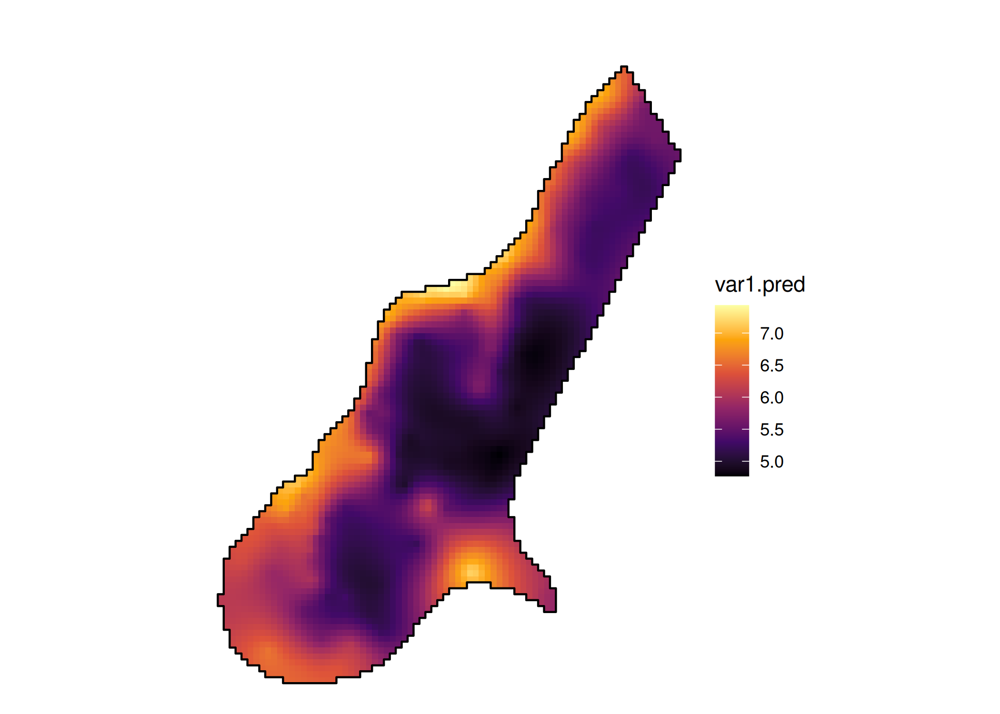
(a) Predição
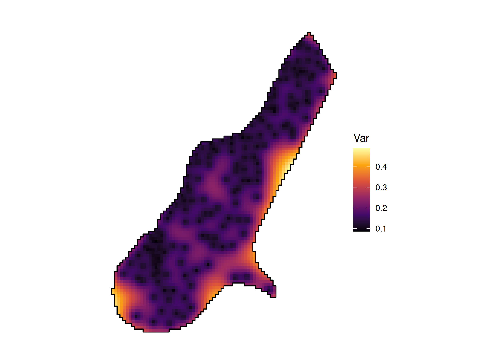
(b) Variância de krigagem
Figura 3.14: Krigagem simples
3.13.2 Krigagem Ordinária (KO)
A Krigagem Ordinária (KO) assume que a média é constante (\(E[Y(\mathbf{s})] = \mu\)) mas desconhecida (Cressie 1993). O modelo deve estimar a média implicitamente localmente, adaptando-se a flutuações locais do nível da variável.
Como nosso problema agora não é simplesmente encontrar o mínimo de $ _E^2(_1, …, _n)$, e sim, encontrar o mínimo sujeito a uma restrição, isto é,
\[
\begin{aligned}
& \underset{\lambda_1, \dots, \lambda_n}{\text{minimizar}}
& & \sigma_E^2(\lambda_1, ..., \lambda_n) \\
& \text{sujeito a}
& & \sum_{i=1}^n \lambda_i - 1 = 0
\end{aligned}
\] temos que somos obrigados a introduzir uma nova variável, o multiplicador \(\nu\), e criamos a função Lagrangiana \(L\), que combina a função objetivo original e a restrição. O fator 2 é pura conveniência algébrica, pois cancela o 2 que surgirá das derivadas, simplificando as equações finais.
O Multiplicador de Lagrange é a ferramenta matemática usada para transformar um problema de otimização com restrições em um problema de otimização sem restrições, facilitando a solução. Assim, temos:
Em notação matricial \(\mathbf{A}_{KO} \mathbf{x}_{KO} = \mathbf{b}_{KO}\):
\[
\begin{bmatrix}
C_{11} & \dots & C_{1n} & 1 \\
\vdots & \ddots & \vdots & \vdots \\
C_{n1} & \dots & C_{nn} & 1 \\
1 & \dots & 1 & 0
\end{bmatrix}
\begin{bmatrix}
\lambda_1 \\ \vdots \\ \lambda_n \\ \nu
\end{bmatrix}
=
\begin{bmatrix}
C_{10} \\ \vdots \\ C_{n0} \\ 1
\end{bmatrix}
\] A Krigagem Ordinária é robusta a tendências locais (drift) se a vizinhança de krigagem for restrita, pois reestima a média localmente em cada janela de busca.
Variância de Krigagem
Para obter a variância de krigagem ordinária \(\sigma_{KO}^2\), substituímos a relação de otimalidade (\(\sum \lambda_j C_{ij} = C_{i0} - \nu\)) na expressão original da variância do erro:
Em termos de variograma (\(\gamma (h)\)), e usando a relação \(C(h) = C(0) - \gamma(h)\), a expressão equivalente é (Andre G. Journel e Huijbregts 1976):
Note-se que \(\nu\) é o multiplicador de Lagrange, que pode ser interpretado como o custo em variância de não conhecermos a média verdadeira.
Se assumirmos que \(\gamma(\mathbf{0}) = 0\) (o variograma teórico na origem é nulo, o efeito pepita \(C_0\) é o limite quando \(h \to 0\)), a expressão simplifica-se. Em termos matriciais:
A variância de krigagem depende apenas da configuração geométrica das amostras e do modelo de variograma, mas não depende dos valores observados \(y(\mathbf{s}_i)\) (propriedade de homocedasticidade da krigagem linear sob normalidade). O mapa de variância de krigagem reflete a densidade da amostragem:
É zero nos locais amostrados (se não houver efeito pepita/erro de medição e usarmos krigagem exata).
Aumenta à medida que nos afastamos dos pontos de dados.
Depende da estrutura espacial: modelos com maior efeito pepita ou menor alcance resultam em maior incerteza de predição.
Quando a média do processo não é constante, mas apresenta uma tendência sistemática (drift) que pode ser modelada como uma função determinística das coordenadas (ex: \(E[Y(\mathbf{s})] = \mu(\mathbf{s}) = \beta_0 + \beta_1 x + \beta_2 y\)), utilizamos a Krigagem Universal (KU) (George Matheron 1971).
Assumimos que a média é uma combinação linear de \(L+1\) funções de base conhecidas \(f_l(\mathbf{s})\) (monómios):
Como isto deve ser verdade para quaisquer coeficientes \(a_l\) desconhecidos, os termos entre parênteses devem ser zero individualmente. Isto gera \(L+1\) restrições:
A matriz \(\mathbf{C}_{nn}\) deve representar a covariância dos resíduos \(\delta(\mathbf{s})\), não dos dados originais \(Y(\mathbf{s})\). Como os resíduos são desconhecidos, na prática estima-se frequentemente o variograma na direção ortogonal à tendência ou usa-se REML para estimar o variograma dos resíduos diretamente.
Quando \(L=0\) (apenas \(f_0(\mathbf{s})=1\)), recupera-se o sistema da KO com um multiplicador \(\nu_0\).
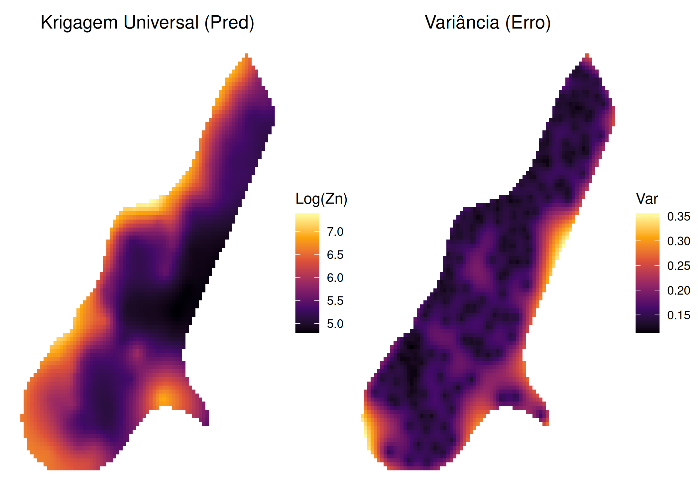
(a) Predição
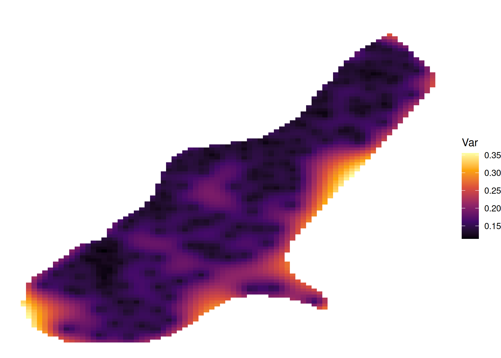
(b) Variância de krigagem
Figura 3.16: Krigagem Universal
3.13.4 Krigagem com Deriva Externa (KED)
A Krigagem com Deriva Externa (KED) é uma variante da Krigagem Universal onde a tendência \(\mu(\mathbf{s})\) não é modelada por coordenadas, mas sim por uma ou mais variáveis auxiliares (covariáveis) \(x_k(\mathbf{s})\) conhecidas exaustivamente em todo o domínio (ex: um Modelo Digital de Elevação para interpolar temperatura ou precipitação) (Goovaerts 1997).
O modelo para a média é: \(E[Y(\mathbf{s})] = a_0 + a_1 x_1(\mathbf{s})\)
\[
\sigma_{\text{KED}}^2 = C_{00} - \sum_{i=1}^n \lambda_i C_{i0} + \nu_0 + \nu_1 x_0
\] A KED é um caso particular da KU onde as funções de base são substituídas por covariáveis conhecidas. Para p covariáveis:
Uma vantagem da KED é que ela incorpora eficientemente informação auxiliar correlacionada com a variável primária, melhorando a precisão da interpolação quando a covariável captura padrões de larga escala. Note que esta covariável deve ser conhecida em todos os pontos (amostrados e não amostrados). Covariância \(C\) deve representar a dependência espacial dos resíduos após remover o efeito da covariável
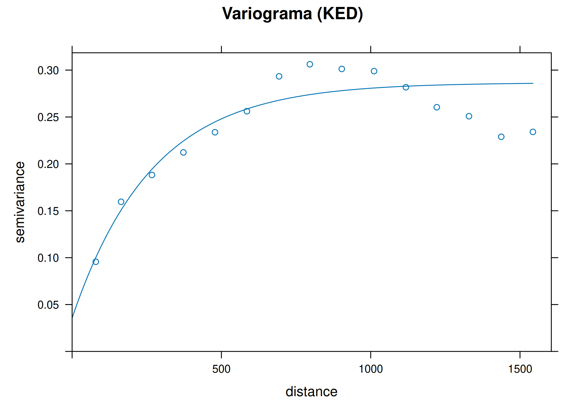
(a) Variograma
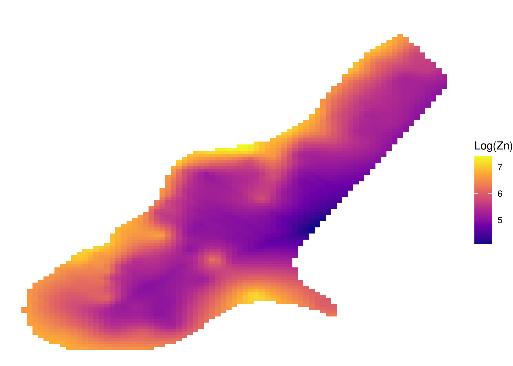
(b) Predição
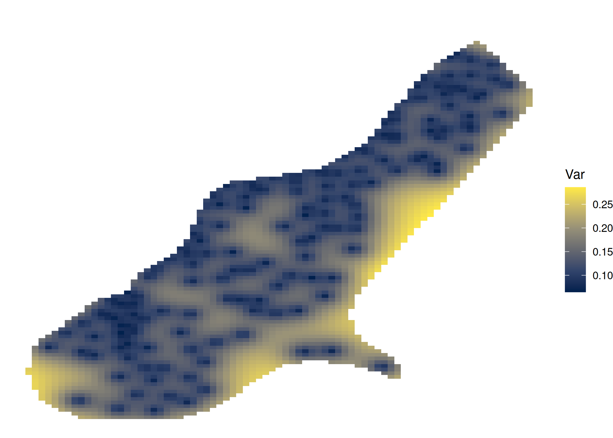
(c) Variância de krigagem
Figura 3.17: Krigagem com deriva externa
3.13.5 Co-Krigagem
A Co-Krigagem (CK) é a extensão multivariada da krigagem. Utiliza-se quando queremos estimar uma variável primária \(Y_1(\mathbf{s}_0)\) utilizando a correlação espacial não só com as suas próprias amostras, mas também com amostras de uma ou mais variáveis secundárias \(Y_2(\mathbf{s}), \dots, Y_k(\mathbf{s})\), que estão correlacionadas espacialmente com \(Y_1\) (co-regionalização) (Ver Hoef e Barry 1998; Wackernagel 2003). Assim, temos:
Para garantir que a matriz de covariâncias cruzadas seja positiva definida, as covariâncias devem ser modeladas como:
\[
C_{ab}(\mathbf{h}) = \sum_{k=1}^K B_{ab}^k \rho_k(\mathbf{h})
\] onde \(\rho_k(\mathbf{h})\) são funções de correlação básicas e \([B_{ab}^k]\) são matrizes de coregionalização definidas não-negativas.
Como descrito nas seções anteriores em geral, \(C_{12}(\mathbf{h}) = C_{21}(-\mathbf{h})\). Para processos estacionários, \(C_{12}(\mathbf{h}) = C_{21}(\mathbf{h})\) se a covariância cruzada é simétrica.
Quando as variáveis secundárias estão disponíveis apenas nos mesmos locais que a primária (ou em grades finas), simplificações são possíveis.
A abordagem condicional de Cressie e Zammit-Mangion (2016) oferece uma alternativa flexível para construir modelos de covariância multivariados válidos e assimétricos. Cressie e Zammit-Mangion (2016) modela a distribuição conjunta condicionando \(Y_1\) a \(Y_2\), evitando a necessidade de modelar explicitamente a covariância cruzada:
\[Y_1(\mathbf{s}) = \mu_1(\mathbf{s}) + \beta(\mathbf{s})[Y_2(\mathbf{s}) - \mu_2(\mathbf{s})] + \delta(\mathbf{s})\] onde \(\beta(\mathbf{s})\) é um coeficiente espacialmente variante.
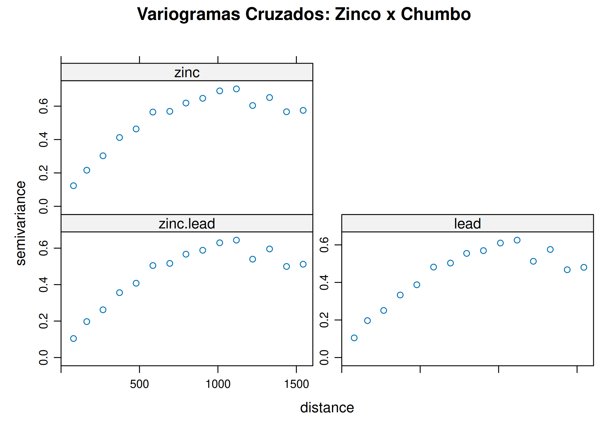
(a) Variograma 1
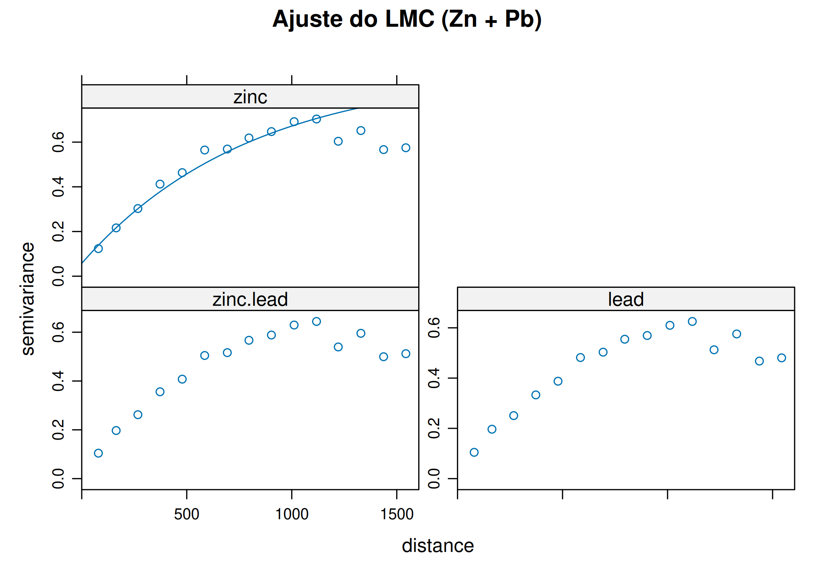
(b) Variograma 2
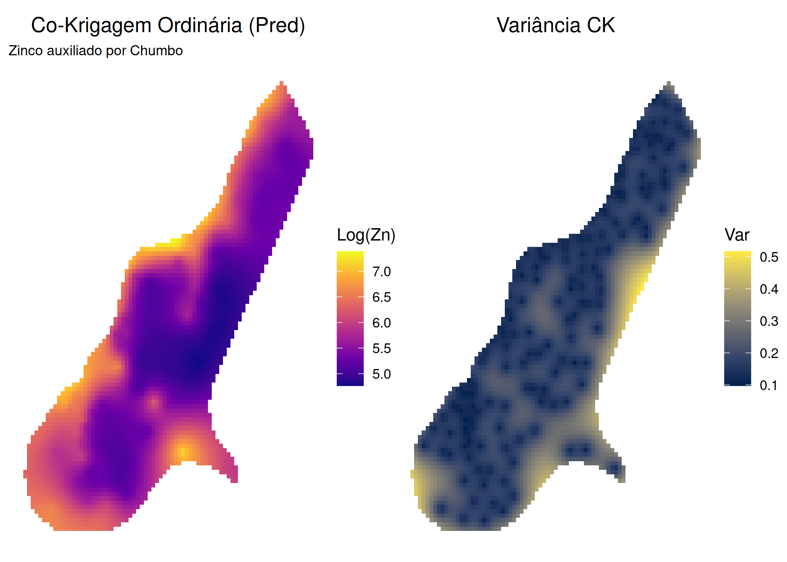
(c) Predição
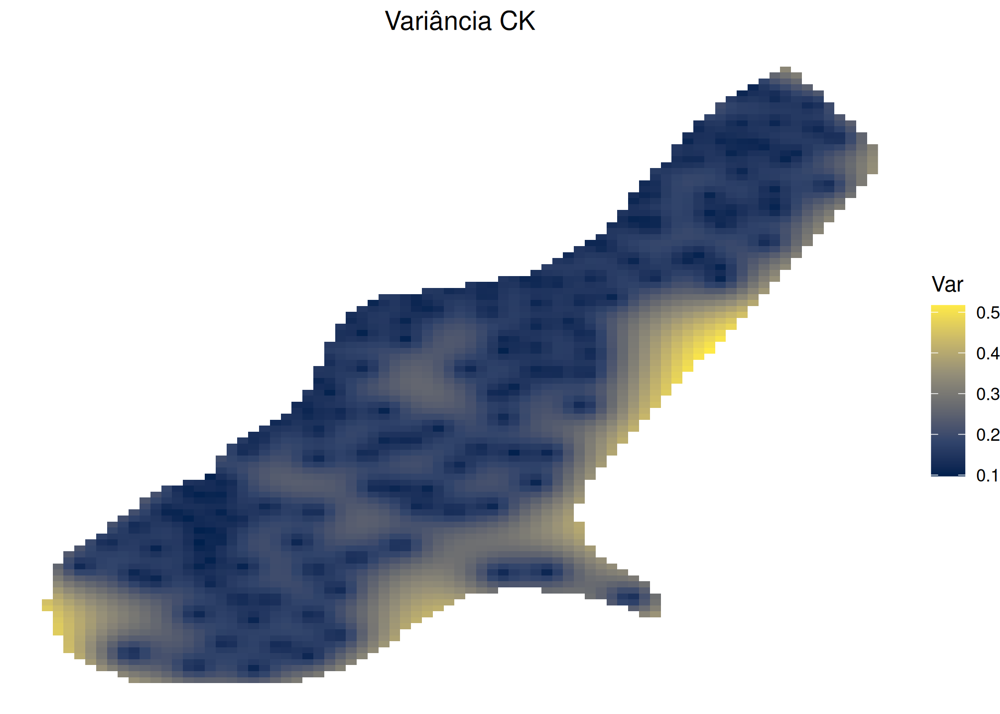
(d) Variância de krigagem
Figura 3.18: Co-Krigagem
3.14 Avaliação da Performance Preditiva
Uma vez ajustado o modelo de variograma e realizada a krigagem, é fundamental verificar se as predições são precisas e se a incerteza (variância de krigagem) está bem calibrada. Para tal, recorre-se a métodos de reamostragem e estatísticas de consistência, sendo a validação cruzada (leave-one-out) a mais usada.
3.14.1 Validação Cruzada
A validação cruzada leave-one-out é o método padrão para verificar a consistência entre a incerteza predita pelo modelo (variância de krigagem) e o erro real de predição. A estatística para este diagnóstico é a Razão de Desvio Quadrático Médio (MSDR - Mean Squared Deviation Ratio), discutida em profundidade por McBratney e Webster (1986) e Lark (2000).
Seja \(Y(\mathbf{s}_i)\) o valor observado no local \(\mathbf{s}_i\). Retiramos este ponto do conjunto de dados e realizamos a krigagem usando os \(n-1\) vizinhos restantes para obter a estimativa \(\hat{Y}_{-i}(\mathbf{s}_i)\) e a variância de krigagem associada \(\sigma_E^2(\mathbf{s}_i)\).
Erro de predição
Definimos o erro de predição (resíduo) como: \[\varepsilon_i = Y(\mathbf{s}_i) - \hat{Y}_{-i}(\mathbf{s}_i)\]
Sob a hipótese nula de que o modelo de variograma \(\gamma(\mathbf{h}; \boldsymbol{\theta})\) e as premissas de estacionariedade estão corretos, o estimador de krigagem é não-viesado e a variância do erro é exata. Se assumirmos adicionalmente que o processo é Gaussiano:
Para avaliar a validade da variância, padronizamos o erro dividindo-o pelo desvio padrão estimado (variância de krigagem). Definimos o resíduo padronizado \(\theta_i\):
Dada a distribuição de \(\varepsilon_i\), a variável \(\theta_i\) deve seguir uma distribuição normal padrão, \(\theta_i \sim \mathcal{N}(0, 1)\). Consequentemente, o quadrado do resíduo padronizado segue uma distribuição Qui-quadrado com 1 grau de liberdade:
\[\theta_i^2 \sim \chi^2_{(1)}\]
A esperança de uma variável \(\chi^2_{(1)}\) é igual aos seus graus de liberdade. Portanto, o valor esperado teórico para o quadrado do erro padronizado é:
A análise do valor de MSDR permite diagnosticar a calibração da incerteza do modelo:
Consistência (\(\text{MSDR} \approx 1\)):
A variância média dos erros reais (numerador) é aproximadamente igual à variância média predita pela krigagem (denominador). O modelo descreve corretamente a variabilidade espacial.
O erro real é sistematicamente maior do que o modelo prevê. Isso ocorre frequentemente quando o variograma subestima o efeito pepita ou a variância total (patamar), ou quando há outliers não modelados.
Superestimação da Incerteza (\(\text{MSDR} < 1\)):
A variância de krigagem é maior do que o erro efetivo. O modelo assume uma variabilidade espacial ou um ruído (pepita) superior ao que realmente existe nos dados. O modelo é “pessimista” ou conservador.
Com base na fundamentação teórica de Journel & Huijbregts (1978), Cressie (1993), Goovaerts (1997) e Chilès & Delfiner (1999), apresento a secção detalhada sobre Anisotropia, mantendo o rigor matemático e a dedução das transformações lineares necessárias para a modelagem.
#Estatísticas de Diagnóstico# MSDR (Razão de Desvio Quadrático Médio)msdr <-mean(cv_results$zscore^2)# ME (Erro Médio) - Deve ser próximo de 0 (viés)me <-mean(cv_results$residual)# RMSE (Raiz do Erro Quadrático Médio)rmse <-sqrt(mean(cv_results$residual^2))resultados <-tibble(Indicador =c("Mean Error (Viés)", "RMSE (Precisão)", "MSDR (Calibração)"),Valor =round(c(me, rmse, msdr), 4))resultados|> knitr::kable()
Indicador
Valor
Mean Error (Viés)
0.0021
RMSE (Precisão)
0.3935
MSDR (Calibração)
0.8657
Código
# Interpretação automática simplesif(msdr >1.1) {cat("MSDR > 1: Subestimação da incerteza (Variograma muito 'otimista' ou outliers).\n")} elseif(msdr <0.9) {cat("MSDR < 1: Superestimação da incerteza (Variograma muito 'pessimista').\n")} else {cat("MSDR ~ 1: Incerteza bem calibrada.\n")}
MSDR < 1: Superestimação da incerteza (Variograma muito 'pessimista').
Código
p1 <-ggplot(cv_results, aes(x = observed, y = var1.pred)) +geom_point(alpha =0.5) +geom_abline(slope =1, intercept =0, color ="red", linetype ="dashed") +labs(title ="Acurácia: Observado vs Predito",subtitle =paste("RMSE:", round(rmse, 3)),x ="Log(Zinc) Observado", y ="Log(Zinc) Predito") +theme_bw()#Histograma dos Z-Scores (Deve parecer uma Normal(0,1))p2 <-ggplot(cv_results, aes(x = zscore)) +geom_histogram(aes(y = ..density..), bins =20, fill ="steelblue", color ="white", alpha =0.7) +stat_function(fun = dnorm, args =list(mean =0, sd =1), color ="red", size =1) +labs(title ="Calibração: Z-Scores",subtitle =paste("MSDR:", round(msdr, 3), "(Ideal = 1.0)"),x ="Resíduo Padronizado", y ="Densidade") +theme_bw()p1 + p2
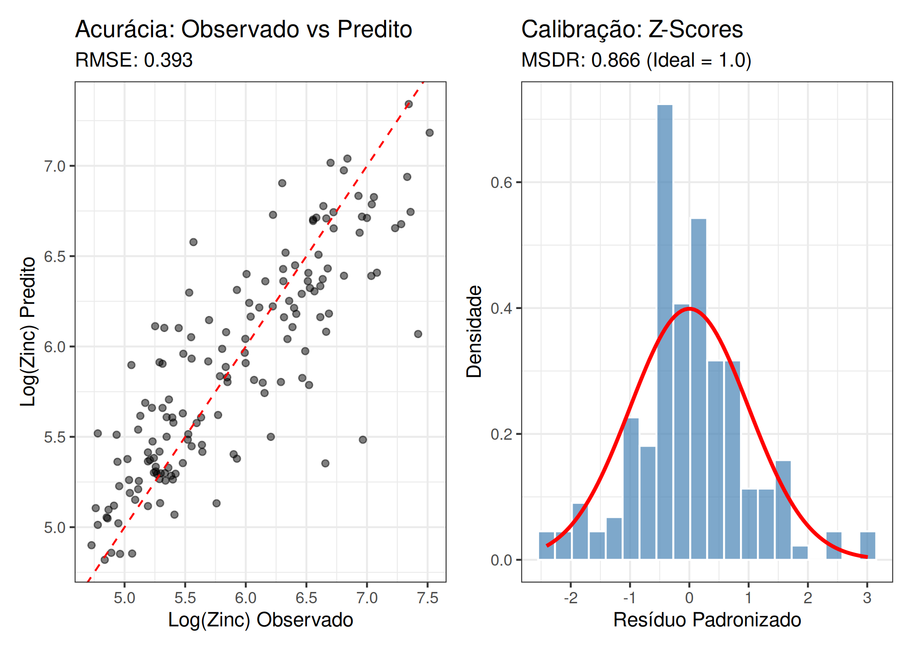
Com base na sua solicitação, elaborei esta seção detalhada sobre Krigagem Indicatriz. Mantive a notação rigorosa \(Y(\mathbf{s})\), integrei a evolução histórica e matemática com base nos documentos fornecidos (de 1983 a 2025) e diferenciei o método das abordagens lineares anteriores.
3.15 Krigagem Indicatriz (IK)
As técnicas de krigagem discutidas anteriormente (Simples, Ordinária, Universal) são classificadas como estimadores lineares. Elas são ótimas para estimar o valor esperado da variável \(Y(\mathbf{s}_0)\) sob a condição de que a distribuição dos dados seja razoavelmente simétrica (dados normais) e livre de outliers extremos. No entanto, em geociências e estudos ambientais, frequentemente lidamos com distribuições altamente assimétricas (ex: concentrações de ouro ou poluentes) onde a média não é uma boa medida de tendência central e a variância de krigagem não reflete a verdadeira incerteza local, pois é independente dos valores dos dados (propriedade da homocedasticidade) (André G. Journel 1983).
A Krigagem Indicatriz (IK), introduzida por André G. Journel (1983), representa uma mudança de paradigma: em vez de estimar o valor da variável \(Y(\mathbf{s}_0)\) diretamente, estimamos a Função de Distribuição Cumulativa Condicional (ccdf) local em \(\mathbf{s}_0\).
A importância fundamental da IK em relação à KO ou KS reside na sua natureza não-paramétrica. Ela não assume normalidade dos dados e é robusta a outliers, pois transforma os dados em binários (0 ou 1) baseados em limiares de corte (cut-offs). Um valor extremamente alto não explode a estimativa, pois é tratado apenas como acima do corte (Carvalho e Deutsch 2017).
Transformada Indicadora e a ccdf
Seja \(Y(\mathbf{s})\) uma variável regionalizada e \(y_k\) um valor de corte (threshold) escolhido. A transformada indicadora \(I(\mathbf{s}; y_k)\) é definida como uma variável binária:
Para variáveis categóricas (como espécies biológicas ou litologia), a definição muda para uma igualdade estrita (\(= y_k\)), conforme descrito por Guimaraes et al. (2012).
A propriedade estatística que fundamenta a IK é que a esperança da variável indicadora é igual à probabilidade cumulativa:
Portanto, ao estimar o valor esperado do indicador num local não amostrado \(\mathbf{s}_0\), estamos estimando a probabilidade de que a variável real seja menor ou igual ao corte \(y_k\), condicionada aos dados vizinhos \((n)\). Esta é a ccdf local:
Note que os pesos \(\lambda_i(y_k)\) dependem do corte \(y_k\). Isso significa que a estrutura de continuidade espacial (variograma) pode mudar para diferentes teores. O ouro de alto teor pode ter uma continuidade espacial muito menor (alcance curto) do que o ouro de baixo teor (alcance longo). Esta flexibilidade é uma vantagem crucial sobre a Krigagem Ordinária, que assume um único variograma para todo o processo (Mohammadpour et al. 2019).
O sistema de equações para obter os pesos é idêntico ao da Krigagem Ordinária, mas aplicado aos dados transformados e ao Variograma Indicador \(\gamma_I(\mathbf{h}; z_k)\):
Myers (1994) classifica a IK como uma extensão não-linear que evita as premissas fortes de distribuição bivariada exigidas pela Krigagem Disjuntiva, embora exija a hipótese de estacionariedade forte para a inferência da ccdf.
Soft Kriging: Incorporando Incertezas
Uma generalização poderosa da IK é a capacidade de incorporar dados imprecisos ou qualitativos, conhecidos como Soft Data. Andre G. Journel (1986) formalizou o conceito de Soft Kriging.
Enquanto um dado exato em \(\mathbf{s}_i\) é codificado como um degrau abrupto na ccdf (0 ou 1), um dado suave (ex: o valor está entre \(a\) e \(b\)) pode ser codificado como uma probabilidade \(y(\mathbf{s}_i; y_k) \in [0, 1]\). O estimador se torna:
Ungaro et al. (2008) expandem este conceito utilizando Simple Indicator Kriging with Varying Local Means (SIK-VLM), onde a média local varia conforme mapas de solo auxiliares, permitindo distinguir anomalias naturais de contaminação antrópica.
Estatísticas E-type e Risco
A IK resulta em um conjunto de probabilidades discretas para \(K\) cortes: \(\hat{F}(y_1), \hat{F}(y_2), \dots, \hat{F}(y_K)\). Para obter uma estimativa de valor (teor) único para o local \(\mathbf{s}_0\), calculamos a esperança da ccdf, conhecida como estimativa E-type:
Onde \(\bar{y}_k\) é a média da classe entre os cortes \(y_k\) e \(y_{k+1}\). Carvalho e Deutsch (2017) destaca a importância de modelar corretamente as caudas da distribuição (abaixo do primeiro corte e acima do último), sugerindo ajustes hiperbólicos para evitar subestimativa de valores extremos.
Além da média, a IK permite quantificar o risco de decisão. Juang e Lee (1998) desenvolvem as equações para calcular a probabilidade de Falso Positivo (\(\alpha\), classificar como perigoso o que é seguro) e Falso Negativo (\(\beta\), classificar como seguro o que é perigoso), cruciais para remediação ambiental.
Desafios e Desenvolvimentos Recentes
Como as krigagens são independentes para cada corte, pode ocorrer que \(P(Y \le 10) < P(Y \le 5)\), o que é matematicamente impossível. Algoritmos de correção (médias ascendentes/descendentes) são aplicados a posteriori (Deutsch e Journel 1997).
Para reduzir o esforço computacional, Hill (1998) propõem a Median Indicator Kriging, assumindo que o variograma da mediana é representativo para todos os cortes. Embora eficiente, Mohammadpour et al. (2019) argumentam que para anomalias sutis, deve-se usar variogramas específicos definidos por modelos Multifractais (FMIK) para separar corretamente as populações geológicas.
O avanço mais recente, proposto por Ji et al. (2025), introduz a Ordered Indicator Kriging com parâmetros de campo. Este método adapta a anisotropia da krigagem localmente baseada na estrutura geológica (dobras, falhas) e na lógica deposicional (proximal-distal), superando a limitação de estacionaridade da IK em ambientes complexos.
Código
pacman::p_load(stars, gstat, ggplot2, sf, viridis, dplyr)data(meuse)data(meuse.grid)#Preparação dos Dados# Definir o corte (Threshold). Vamos usar o 3º quartil do Zinco como "perigo".threshold <-quantile(meuse$zinc, 0.75) meuse$zinc_ind <-ifelse(meuse$zinc > threshold, 1, 0) # 1 se perigoso, 0 se seguromeuse_sf <-st_as_sf(meuse, coords =c("x", "y"), crs =28992)grid_sf <-st_as_sf(meuse.grid, coords =c("x", "y"), crs =28992)grid_stars <-st_rasterize(grid_sf, dx =40, dy =40)#Variograma Indicadorv_ind <-variogram(zinc_ind ~1, meuse_sf)m_ind <-fit.variogram(v_ind, vgm(0.15, "Exp", 600, 0.05))plot(v_ind, m_ind, main ="Variograma Indicador (Zinco > Q75)")#Krigagem Indicatriz (Ordinária)# O resultado (var1.pred) será a PROBABILIDADE de ser 1 (acima do corte)ik <-krige(zinc_ind ~1, locations = meuse_sf, newdata = grid_stars, model = m_ind, debug.level =0)ik$probabilidade <-pmin(pmax(ik$var1.pred, 0), 1)ggplot() +geom_stars(data = ik, aes(fill = probabilidade)) +geom_sf(data = meuse_sf, aes(color =as.factor(zinc_ind)), size =1) +scale_fill_viridis_c(option ="turbo", name ="Prob. > Corte", na.value ="transparent") +scale_color_manual(values =c("white", "black"), name ="Dados Reais", labels =c("<= Corte", "> Corte"))+labs(title ="",subtitle ="Probabilidade do teor de Zinco exceder o limiar de 75%",x =NULL, y =NULL) +theme_void() +theme(plot.title =element_text(hjust =0.5), legend.position ="right")
Figura 3.19: Krigagem Indicatriz
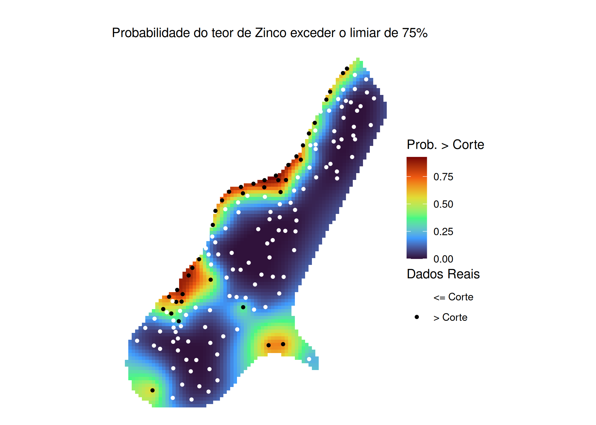
Figura 3.20: Krigagem Indicatriz
3.16 Desafios Computacionais e a Abordagem SPDE
Imagine que você é um climatologista modelando a temperatura da superfície do mar no Atlântico Norte usando dados de satélite. Você tem \(n = 100.000\) pontos de observação \(\mathbf{s}_1, \dots, \mathbf{s}_n\) e deseja prever a temperatura em locais não medidos e entender a variabilidade espacial.
Na geoestatística, assumimos que o vetor de temperaturas observadas \(\mathbf{y}\) é uma realização de um Campo Aleatório Gaussiano (GRF) \(x(\mathbf{s})\). A dependência espacial é regida por uma Matriz de Covariância densa \(\mathbf{\Sigma}\), onde o elemento \(\Sigma_{ij}\) descreve a correlação entre \(\mathbf{s}_i\) e \(\mathbf{s}_j\).
Um Campo Aleatório Gaussiano (GRF - Gaussian Random Field), denotado por \(\{x(\mathbf{s}) : \mathbf{s} \in D^G \subset \mathbb{R}^d\}\), é um processo estocástico onde, para qualquer conjunto finito de locais \(\{\mathbf{s}_1, \dots, \mathbf{s}_n\}\), o vetor \(\mathbf{x} = (x(\mathbf{s}_1), \dots, x(\mathbf{s}_n))^\top\) segue uma distribuição Normal Multivariada:
Onde \(\boldsymbol{\mu}\) é o vetor de médias e \(\boldsymbol{\Sigma}\) é a matriz de covariância, cujos elementos são dados por uma função de covariância definida positiva \(C(\cdot)\):
A função \(C\) é função de covariância da Matérn, que controla a variância e a suavidade do campo. Note que ao longo do texto descrevemos funções de semivariograma, mas poderiamos ter o feito para funções de covariância.
Para estimar parâmetros (como o alcance da correlação) via Máxima Verossimilhança, precisamos calcular a log-verossimilhança:
Isso exige calcular o determinante \(|\mathbf{\Sigma}|\) e a inversa \(\mathbf{\Sigma}^{-1}\). O método padrão é a Fatoração de Cholesky (\(\mathbf{\Sigma} = \mathbf{L}\mathbf{L}^\top\)), que decompõe a matriz \(\boldsymbol{\Sigma}\) em um produto \(\boldsymbol{\Sigma} = \mathbf{L}\mathbf{L}^\top\), onde \(\mathbf{L}\) é uma matriz triangular inferior única com elementos diagonais estritamente positivos.
A matriz \(\mathbf{\Sigma}\) é densa. Em processos espaciais, tudo se correlaciona com tudo (Primeira Lei da Geografia), mesmo que a correlação seja ínfima a longas distâncias.
O problema é que a matriz \(\boldsymbol{\Sigma}\) é densa (quase todos os elementos são não-nulos, pois a correlação decai com a distância mas nunca é exatamente zero). Portanto, \(\Sigma_{ij} \neq 0\) para quase todos os pares. Como consequência, o custo computacional da fatoração de Cholesky para uma matriz densa seja de ordem \(\mathcal{O}(n^3)\) e o custo de armazenamento (memória) de ordem \(\mathcal{O}(n^2)\). Para \(n=100.000\), isso exige da ordem de \(10^{15}\) operações e cerca de 80 GB de RAM apenas para armazenar a matriz em precisão dupla. Isso torna a geoestatística clássica computacionalmente proibitiva para grandes conjuntos de dados (Abdulah et al. 2023).
A solução reside na mudança de paradigma: modelar a Precisão (dependência local) em vez da Covariância (dependência global).
Covariância (\(\mathbf{\Sigma}\)) descreve a correlação marginal. Se o ponto A afeta B, e B afeta C, então A está correlacionado com C. O grafo de dependência é completo (denso).
Precisão (\(\mathbf{Q} = \mathbf{\Sigma}^{-1}\)) descreve a correlação condicional. Se fixarmos o valor de B, A e C tornam-se independentes (propriedade de Markov). Em um Campo Aleatório de Markov Gaussiano (GMRF), um ponto só interage com seus vizinhos imediatos. A matriz é esparsa (cheia de zeros).
Para construir uma matriz esparsa \(\mathbf{Q}\) que corresponda a um modelo de covariância contínuo e válido, recorre-se a abordagem Stochastic Partial Differential Equation ( SPDE ou Equação Diferencial Parcial Estocástica).
Uma SPDE é uma equação diferencial onde um ou mais termos são processos estocásticos. No contexto da geoestatística, usamos uma SPDE linear para descrever como o campo \(x(\mathbf{s})\) é gerado a partir de um ruído branco.
Whittle (1954) provou um campo aleatório Gaussiano estacionário \(x(\mathbf{s})\) em \(\mathbb{R}^d\) com função de covariância Matérn é a solução estacionária da seguinte Equação Diferencial Parcial Estocástica (SPDE) linear fracionária impulsionada por um ruído branco Gaussiano:
\(\Delta\) (Laplaciano) é operador diferencial definido como \(\Delta = \sum_{i=1}^d \frac{\partial^2}{\partial s_i^2}\). Mede a concavidade local.
\(\mathcal{W}(\mathbf{s})\) (Ruído Branco Espacial) é um processo estocástico Gaussiano com média zero e densidade espectral constante \(S_{\mathcal{W}}(\boldsymbol{\omega}) = 1\) em todas as frequências. Para quaisquer funções de teste \(f, g \in L^2(\mathbb{R}^d)\), a covariância é dada pelo produto interno: \(\text{Cov}(\langle f, \mathcal{W} \rangle, \langle g, \mathcal{W} \rangle) = \int f(\mathbf{s})g(\mathbf{s}) d\mathbf{s}\).
\(\kappa\) é parâmetro de escala espacial (\(>0\)). Controla o decaimento da correlação. Relacionado ao Alcance (\(\rho\)) por \(\rho = \sqrt{8\nu}/\kappa\).
\(\alpha\) é parâmetro de suavidade que determina a ordem da equação diferencial. Relacionado ao parâmetro \(\nu\) da Matérn por \(\alpha = \nu + d/2\)
\(\tau\) é parâmetro de escala da variância. Controla a magnitude das flutuações. Relacionado à variância marginal \(\sigma^2\).
Para provar que a solução da equação acima realmente gera uma covariância Matérn, utilizamos a análise espectral no domínio da frequência (Lindgren, Rue, e Lindström 2011). Que fundamenta-se na transformada de Fourier \(\mathcal{F}\), que consiste em converter uma função do domínio espacial \(\mathbf{s}\) para o domínio da frequência \(\boldsymbol{\omega}\). Uma propriedade crucial é como ela afeta o operador Laplaciano:
A densidade espectral de potência \(S_x(\boldsymbol{\omega})\) do campo \(x\) é dada pelo quadrado do módulo da função de transferência multiplicado pela densidade espectral do ruído de entrada (que é 1):
Este resultado, \(S_x(\boldsymbol{\omega}) \propto (\kappa^2 + \|\boldsymbol{\omega}\|^2)^{-\alpha}\), é exatamente a definição da densidade espectral de um campo isotrópico com covariância da classe Matérn em \(\mathbb{R}^d\), com parâmetro de suavidade \(\nu = \alpha - d/2\)Lindgren, Bolin, e Rue (2022).
Discretização via Método de Elementos Finitos
A SPDE é uma equação definida no contínuo. Para implementá-la computacionalmente e obter a almejada esparsidade, precisamos discretizar o domínio espacial \(D^G\). Lindgren, Rue, e Lindström (2011) propõem o uso do Método de Elementos Finitos (FEM), uma técnica numérica para encontrar soluções aproximadas de equações diferenciais parciais. O método consiste em subdividir um domínio contínuo em um conjunto de subdomínios discretos (elementos, formando uma malha) e aproximar a solução da equação como uma combinação linear de funções de base simples definidas nesses elementos (Cressie, Sainsbury-Dale, e Zammit-Mangion 2022).
A Malha e as Funções de Base
Subdividimos o domínio \(D^G\) em uma malha (mesh) de triângulos não sobrepostos. Seja \(V\) o número de vértices (nós) da malha. Definimos uma aproximação do campo contínuo \(x(\mathbf{s})\) como:
\(w_k\) são pesos aleatórios (Gaussianos) associados a cada vértice \(k\). O objetivo da inferência passa a ser encontrar a distribuição conjunta do vetor de pesos \(\mathbf{w} = (w_1, \dots, w_V)^\top\).
\(\psi_k(\mathbf{s})\) são funções de base determinísticas, lineares por partes. A função \(\psi_k\) vale 1 no vértice \(k\), decai linearmente para 0 nos vértices vizinhos e é identicamente nula em todo o restante do domínio. Esta propriedade de suporte compacto é crucial para a esparsidade.
Não podemos substituir a aproximação diretamente na SPDE \((\kappa^2 - \Delta)x = \mathcal{W}\) (assumindo \(\alpha=2\) para simplificar, o que equivale a \(\nu=1\) em 2D), pois a segunda derivada \(\Delta\) de funções lineares por partes resulta em funções indefinidas (Deltas de Dirac) nas arestas dos triângulos.
Para contornar isso, usamos a formulação fraca (ou variacional): multiplicamos a SPDE por uma função de teste (escolhemos a própria base \(\psi_i\)) e integramos sobre o domínio \(\Omega\):
Para resolver o termo com o Laplaciano (\(\int \psi_i \Delta x\)), aplicamos a Primeira Identidade de Green, que é a generalização da integração por partes para dimensões superiores. Assumindo condições de fronteira de Neumann (derivada normal nula na borda do domínio), a identidade transfere uma derivada do campo \(x\) para a função de teste \(\psi_i\):
\[-\int_{\Omega} \psi_i \Delta x \, d\mathbf{s} = \int_{\Omega} \nabla \psi_i \cdot \nabla x \, d\mathbf{s}\]
Substituindo a expansão \(x(\mathbf{s}) = \sum_{j=1}^V w_j \psi_j(\mathbf{s})\) na equação integral:
onde \(\tilde{\mathbf{W}}\) é um vetor Gaussiano com média zero. Pela propriedade do ruído branco espacial, a matriz de covariância de \(\tilde{\mathbf{W}}\) é igual à matriz de massa \(\mathbf{C}\) (pois \(\text{Cov}(\int f \mathcal{W}, \int g \mathcal{W}) = \int fg\)).
Nosso objetivo final é encontrar a matriz de precisão \(\mathbf{Q}\) dos pesos \(\mathbf{w}\). Da equação linear derivada acima, definimos a matriz do sistema como \(\mathbf{K} = \kappa^2 \mathbf{C} + \mathbf{G}\). Temos então: \(\mathbf{K}\mathbf{w} = \tilde{\mathbf{W}}\)
A matriz de covariância de \(\mathbf{w}\), denotada por \(\boldsymbol{\Sigma}_w\), é dada por:
As matrizes \(\mathbf{K}\) e \(\mathbf{C}\) são esparsas, pois as funções de base \(\psi_i\) e \(\psi_j\) só se sobrepoem se os vértices \(i\) e \(j\) forem vizinhos na malha. Se não forem vizinhos, as integrais são zero. No entanto, a inversa de uma matriz esparsa (\(\mathbf{C}^{-1}\)) é, em geral, densa. Se usássemos \(\mathbf{C}^{-1}\) na fórmula acima, \(\mathbf{Q}\) se tornaria densa, destruindo todo o benefício computacional da abordagem.
Para resolver isso, Lindgren, Rue, e Lindström (2011) utilizam a técnica de Mass Lumping (comum em métodos numéricos): substituímos a matriz de massa consistente \(\mathbf{C}\) por uma matriz diagonal \(\tilde{\mathbf{C}}\), onde os elementos diagonais são a soma das linhas de \(\mathbf{C}\):
Como a inversa de uma matriz diagonal é trivial e também diagonal (portanto, esparsa), podemos calcular a precisão final preservando a esparsidade. Substituindo \(\mathbf{K} = \kappa^2 \mathbf{C} + \mathbf{G}\) e usando a aproximação diagonal \(\tilde{\mathbf{C}}\), obtemos a matriz de precisão explícita para \(\alpha=2\):
A matriz \(\mathbf{Q}_{\text{SPDE}}\) é construída apenas por somas e multiplicações de matrizes esparsas e diagonais. Portanto, \(\mathbf{Q}_{\text{SPDE}}\) é esparsa. Esta esparsidade permite o uso de algoritmos eficientes de fatoração de Cholesky esparsa, reduzindo a complexidade computacional de \(\mathcal{O}(n^3)\) para aproximadamente \(\mathcal{O}(n^{3/2})\) em problemas espaciais 2D. Isso viabiliza a análise bayesiana (via INLA) (Bakka et al. 2018; Lindgren e Rue 2015) ou a estimação de máxima verossimilhança (via ExaGeoStatR) para grandes conjuntos de dados geoestatísticos (Big Data) que eram anteriormente intratáveis (Abdulah et al. 2023).
Código
pacman::p_load(sf, ggplot2)set.seed(123)fronteira <-st_polygon(list(rbind(c(0,0), c(10,0), c(10,10), c(0,10), c(0,0))))pontos <-st_sample(fronteira, size =30)borda_externa <-st_buffer(st_sfc(fronteira), dist =2) pontos_borda <-st_sample(st_cast(borda_externa, "LINESTRING"), size =20)todos_pontos <-c(pontos, pontos_borda)malha <-st_triangulate(st_combine(todos_pontos)) |>st_collection_extract("POLYGON") |>st_sf()ggplot() +geom_sf(data = malha, fill =NA, color ="grey60", size =0.3) +geom_sf(data = fronteira, fill =NA, color ="blue", size =1) +geom_sf(data = pontos, color ="red", size =2) +theme_void() +labs(title ="",subtitle ="(1) Triângulos cinza sao elementos finitos; (2) pontos vermelhos \nsão dados observados; (3) linha azul é o domínio de estudo") +theme(plot.title =element_text(hjust =0.5),plot.subtitle =element_text(hjust =0.5, color ="grey40"))
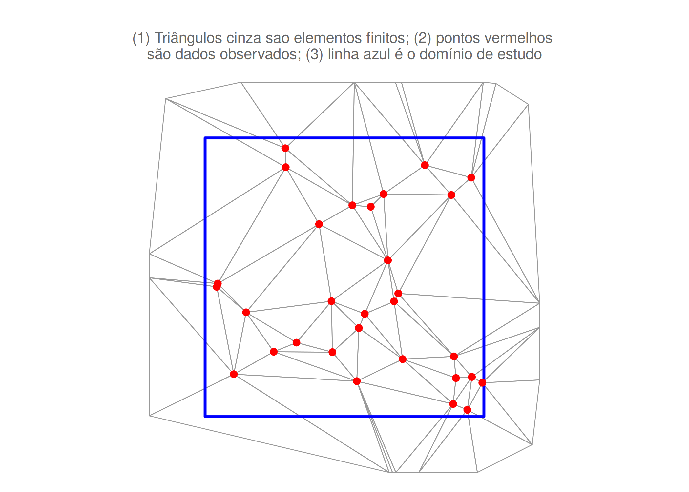
Figura 3.21: Conceito de Malha (Mesh) para SPDE. A precisão é maior onde há dados e menor nas bordas.
ImportanteAprofundamento Teórico e Prático
Além dos métodos abordados aqui, existem diversas variantes de Krigagem desenvolvidas para lidar com características específicas dos dados. Entre elas destacam-se: a Krigagem Lognormal (aplicada aos logaritmos dos dados); a Krigagem Multi-Gaussiana (aplicada após a transformação normal score), que é uma generalização da lognormal; a Krigagem de Postos (Rank Kriging, baseada na transformação uniforme); Krigagem Disjuntiva, entre outras. Para maior detalhes e aplicações, recomenda-se a leitura do capítulo 4 de Deutsch e Journel (1997).
Muitas vezes, a aplicação correta de transformações nos dados é suficiente para resolver problemas de estacionaridade ou não-normalidade. Aos interessados neste tópico, recomenda-se a leitura do capítulo 3 de Yamamoto e Landim (2013).
Por fim, para uma visão histórica completa da geoestatística e um guia prático de ferramentas computacionais, sugere-se o capítulo 3 de Scalon (2024). A obra abrange o uso do R/RStudio, análise exploratória, outros tipos de semivariogramas, validação de modelos e inclui um tutorial detalhado sobre o pacote geoR.
3.17 Algumas aplicações da Geoestatística por área
3.17.1 Geociências e Engenharia de Recursos
Mineração e Avaliação de Reservas
A metodologia é aplicada para a estimativa de recursos e reservas recuperáveis. A Krigagem indicadora, permite modelar a distribuição local de incerteza, calculando a probabilidade de um bloco exceder um teor de corte econômico. Isso fundamenta o planejamento de lavra e a análise de seletividade.
Referência: JOURNEL, A. G. Nonparametric estimation of spatial distributions. Mathematical Geology, v. 15, n. 3, p. 445–468, 1983.
Engenharia de Reservatórios (Petróleo e Gás)
A caracterização de reservatórios exige a reprodução de heterogeneidades complexas (como canais fluviais meandrantes) que impactam o fluxo de fluidos. A indústria utiliza a Estatística de Múltiplos Pontos (MPS), que substitui o variograma por “imagens de treinamento” para simular estruturas curvilíneas e conectividade de fácies, essenciais para a simulação de fluxo.
Referência: STREBELLE, S. Conditional simulation of complex geological structures using multiple-point statistics. Mathematical Geology, v. 34, n. 1, p. 1–21, 2002.
3.17.2 2. Ciências Agrárias e Ambientais
O foco deste domínio é a otimização de recursos (insumos) e o monitoramento de variáveis contínuas em superfície.
Agricultura de Precisão e Ciência do Solo
A geoestatística quantifica a dependência espacial de atributos físico-químicos do solo para definir zonas de manejo. A análise da razão nugget/sill no variograma classifica a estabilidade da estrutura espacial, orientando a interpolação para aplicação de insumos à taxa variável (VRT), o que maximiza a eficiência agronômica e reduz o impacto ambiental.
Referência: CAMBARDELLA, C. A. et al. Field-scale variability of soil properties in central Iowa soils. Geoderma, v. 60, n. 1-4, p. 150–170, 1994.
Climatologia e Hidrologia
Em redes de monitoramento esparsas, técnicas multivariadas como a Krigagem com Deriva Externa (KED) são empregadas para interpolar precipitação e temperatura. O método incorpora modelos digitais de elevação (DEM) como covariáveis exaustivas, corrigindo tendências orográficas e aumentando significativamente a precisão das estimativas hidrológicas.
Referência: GOOVAERTS, P. Geostatistical approaches for incorporating elevation into the spatial interpolation of rainfall. Journal of Hydrology, v. 228, n. 1-2, p. 113–129, 2000.
3.17.3 3. Saúde Pública e Ciências Sociais
A aplicação centra-se na detecção de clusters e no mapeamento de risco em populações.
Epidemiologia
A Geoestatística é usada para o mapeamento de doenças tropicais (ex: Malária). Esta abordagem acopla processos Gaussianos a Modelos Lineares Generalizados Mistos (GLMM), permitindo inferir superfícies de probabilidade de infecção em locais não amostrados, servindo de base para políticas da Organização Mundial da Saúde (OMS).
Referência 1: DIGGLE, P. J.; TAWN, J. A.; MOYCEED, R. A. Model-based geostatistics. Journal of the Royal Statistical Society: Series C (Applied Statistics), v. 47, n. 3, p. 299–350, 1998.
Referência 2: Artigos da Professora Paula Moraga e referências neles existentes
3.17.4 4. Energias Renováveis
Previsão de Potencial Eólico e Solar
A viabilidade de parques energéticos depende da mitigação da intermitência climática. Modelos geoestatísticos são utilizados para prever a disponibilidade de irradiância solar e velocidade do vento, integrando dados de satélite e estações terrestres para garantir a estabilidade da rede elétrica.
Embora suas raízes estejam no antigo pacote sp, as versões contemporâneas do gstat integram-se nativamente com os pacotes sf (Simple Features) e stars (Spatiotemporal Arrays), permitindo um fluxo de trabalho moderno e computacionalmente eficiente.
Utilizaremos o conjunto de dados meuse (concentração de metais pesados na planície de inundação do rio Meuse, Holanda) para demonstração.
Preparação do Ambiente e Dados
Para a execução de rotinas geoestatísticas, dois componentes geométricos são imprescindíveis:
Dados Observados (Suporte Pontual): As amostras coletadas em campo.
Malha de Predição (Suporte de Área/Grade): O domínio espacial discretizado onde as estimativas serão realizadas.
Código
if (!require("pacman")) install.packages("pacman")pacman::p_load(gstat, sf, stars, ggplot2, viridis, dplyr,gt, gridExtra)#Carregamento e conversão dos dados amostraisdata(meuse)# O CRS 28992 refere-se à projeção holandesa Amersfoort / RD New, vc nos seus dados usaraa crs=4326meuse_sf <-st_as_sf(meuse, coords =c("x", "y"), crs =28992)glimpse(meuse_sf)
A krigagem precisa de locais para onde serão feitas as predições. Para tal criaremos uma grade regular (raster) baseada nos limites da área.
Código
# O pacote traz um polígono 'meuse.area', vamos convertê-lo para sfdata(meuse.area)limite_sf <-st_polygon(list(as.matrix(meuse.area))) |>st_sfc(crs =28992) |>st_sf() #provavelmente vc terá um arquivo shapfile, use arquivo .shp#Gerar a Grade Regular (Rasterização Vetorial)# st_make_grid cria a geometria. 'cellsize' define a resolução (ex: 40x40 metros)grid_vetorial <-st_make_grid(limite_sf, cellsize =40, what ="centers") |>st_as_sf() |>st_filter(limite_sf) # Recorta a grade para ficar apenas dentro do polígono#Conversão para STARS (Mais eficiente para o gstat)grid_stars <-st_as_stars(st_bbox(limite_sf), dx =40, dy =40)grid_stars <-st_crop(grid_stars, limite_sf) # Mascara o que está fora do limiteggplot() +geom_sf(data = grid_vetorial, color="white") +# vc pode trocar 'grid_vetorial' por 'grid_stars'geom_sf(data = meuse_sf, color ="red", size =0.5) +# e aqui trocar 'geom_sf' por geom_stars(data=grid_stars)geom_sf(data=limite_sf, color="black", fill=NA)+labs(title ="Domínio de Predição (Grade) e Amostras (Vermelho)") +theme_void()
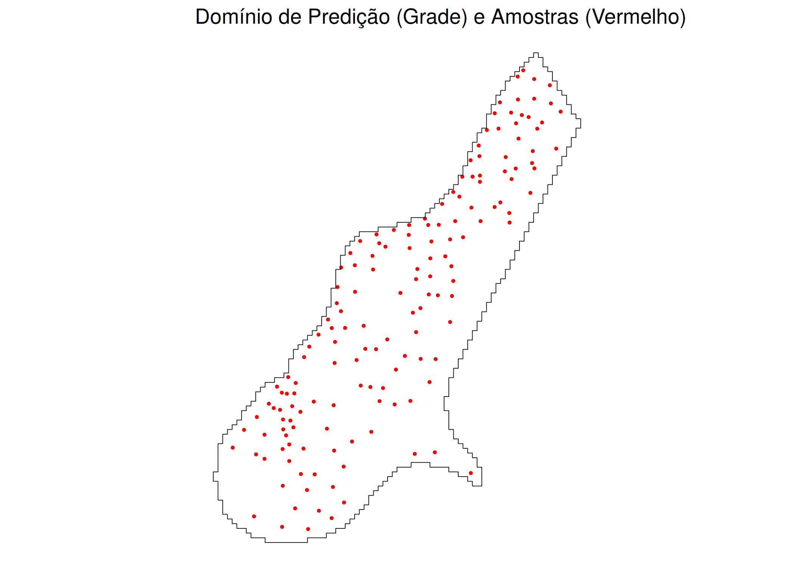
Análise exploratória espacial
Antes de modelar, é necessário verificar a existência de dependência espacial.
hscat: Gráficos de Dispersão Defasados
A função hscat (h-scatterplots) confronta o valor de \(Z(s)\) com \(Z(s+h)\). Se houver estrutura espacial, espera-se que, para distâncias (\(h\)) pequenas, os pontos se alinhem à diagonal (alta correlação). Conforme \(h\) aumenta, a nuvem deve se dispersar.
formula: Define a variável e/ou variável resposta (ex: log(zinc) ~ 1) (recomenda-se transformação logarítmica para dados assimétricos de concentração).
data: O objeto espacial contendo as observações.
breaks: Vetor numérico definindo os limites dos intervalos de distância (lags).
Figura 3.22: Dispersão espacial do log(Zinco) em diferentes lags
Modelagem da Covariância
A etapa central da geoestatística é a determinação da função de semivariância \(\gamma(h)\), que quantifica a dissimilaridade espacial.
O Variograma Experimental: variogram
A função variogram calcula a semivariância média para classes de distância discretas a partir dos dados observados.
Sintaxe: variogram(object, locations, ...)
Argumentos:
formula: Para Krigagem Ordinária, utiliza-se z ~ 1 (média constante). Para Krigagem Universal, define-se a tendência, ex:z ~ x + y, para as demais krigagens consulte a seção Seção 3.13.
cutoff: A distância máxima de investigação. Por convenção, limita-se a 1/3 da diagonal da área de estudo para garantir representatividade amostral nos lags.
width: A largura do intervalo de classe (tamanho do lag).
cloud: Se TRUE, retorna a nuvem variográfica (semivariância de todos os pares individuais), útil para detecção de outliers.
map: Se TRUE, gera um mapa variográfico para inspeção de anisotropia.
alpha: Direção em graus (ex: c(0, 45, 90, 135)) para investigar anisotropia.
“Gau” (Gaussiano): Suave na origem (parabólico), indica alta continuidade.
range: Alcance.
nugget: Efeito pepita (erro na origem).
Para visualizar as famílias disponíveis, utiliza-se show.vgms().
Código
# Definição inicial baseada na inspeção visual do gráfico anteriormodelo_inicial <-vgm(psill =0.6, model ="Sph", range =800, nugget =0.05) #range 800 porque parece se estabilizar nele# no mesmo lugar que se estabiliza range 800, temos uma patamar (psill) de ~ 0.6 a 0.7#começa meio como linha reta obliquo, então aparenta ser esférico (Sph)# se olhar para onde se interceta o eixo y parece ser ~0.05 esse é efeito pepita (nugget)
:: {.callout-important title=“Correção da Anisotropia Geométrica”}
Para corrigir a anisotropia geométrica no gstat, utilizamos o argumento anis dentro da função de modelagem do variograma:
Construímos variogramas para diferentes direções (geralmente \(0^\circ\), \(45^\circ\), \(90^\circ\) e \(135^\circ\)).
Eixo Maior (Ângulo): Identificamos a direção que apresenta o maior alcance (e não o maior patamar, pois na anisotropia geométrica o patamar é assumido como constante). O ângulo dessa direção (medido em graus a partir do Norte, no sentido horário) será o primeiro valor de anis.
Razão de Anisotropia (\(\lambda\)): Calculamos a razão entre o menor alcance (da direção perpendicular) e o maior alcance. \[\lambda = \frac{\text{alcance menor}}{\text{alcance maior}}\]
Nota: No geoR é \(\lambda = \frac{\text{alcance maior}}{\text{alcance menor}}\)
O argumento final será preenchido como anis = c(ângulo, razão). Por exemplo, se o maior alcance for 100m na direção \(45^\circ\) e o menor for 50m, usamos anis = c(45, 0.5), onde \(0.5=50 \text{m /100 m}\). Isso encolhe o modelo na direção de menor continuidade para que ele se ajuste à realidade dos dados.
Maiores detalhes sobre este ajuste podem ser consultados na seção Seção 3.9 .
:::
Ajuste de Parâmetros: fit.variogram
A função fit.variogram ajusta os parâmetros do modelo teórico (vgm) aos pontos experimentais (v_exp) utilizando Mínimos Quadrados Ponderados (WLS). O método pondera mais fortemente os lags iniciais (menores distâncias), que contêm mais pares de pontos e são cruciais para a interpolação.
newdata: Objeto sf ou stars com os locais de predição.
model: O modelo de variograma ajustado.
block: (Opcional) Se fornecido um vetor, ex: c(40, 40), realiza Krigagem de Bloco, estimando o valor médio dentro da célula, resultando em mapas mais suaves e menor variância de predição.
O objeto resultante (krigagem_ord) contém duas variáveis fundamentais:
var1.pred: O valor predito (estimativa).
var1.var: A variância da krigagem (incerteza da estimativa).
Visualização de Mapas de Predição e Incerteza
A apresentação correta dos resultados exige a exibição da estimativa juntamente com sua incerteza associada.
Código
pacman::p_load(stars)krigagem_raster <-st_rasterize(krigagem_ord) |>st_crop( limite_sf) #corta apenas a area do shapfile#g1 <-ggplot() +geom_stars(data = krigagem_raster, aes(fill = var1.pred, x = x, y = y)) +scale_fill_viridis_c(option ="B", name ="log(Zn)", na.value ="transparent") +geom_sf(data = limite_sf, fill =NA, color ="black") +labs(title ="Predição (Superfície Raster)") +theme_minimal()g2 <-ggplot() +geom_stars(data = krigagem_raster, aes(fill =sqrt(var1.var), x = x, y = y)) +scale_fill_viridis_c(option ="B", name ="SD", na.value ="transparent") +geom_sf(data = limite_sf, fill =NA, color ="black") +labs(title ="Incerteza (Desvio Padrão)") +theme_minimal()+theme(axis.title =element_blank()) #remove os eixos x e y (veja no da esquerda existem porque não removemos)g1; g2
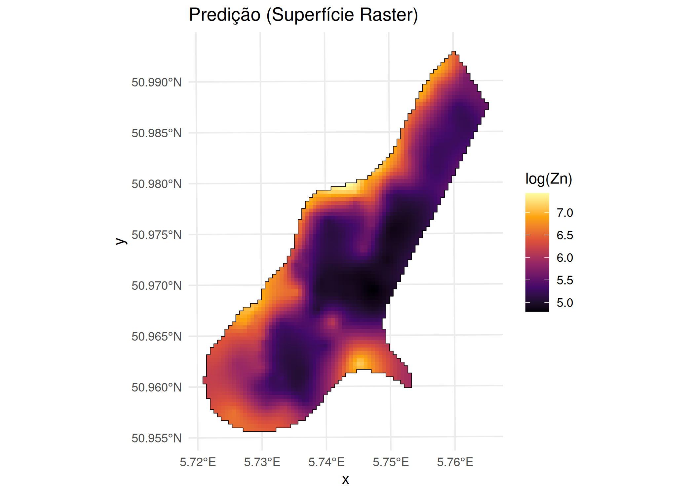
Figura 3.25: Mapas de Predição e Incerteza (Desvio Padrão)
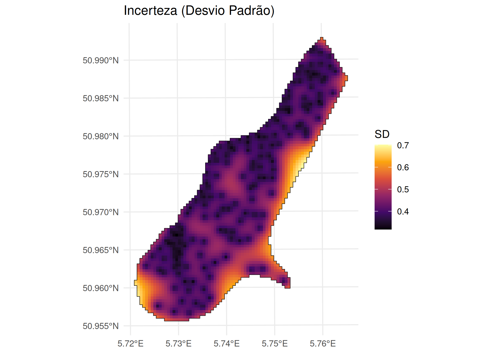
Figura 3.26: Mapas de Predição e Incerteza (Desvio Padrão)
Alternativamente poderia fazer:
Código
# st_bbox pega os limites da áreabb <-st_bbox(limite_sf) # onde limite_sf é seu shapfile# Criar objeto stars vazio com resolução de 40mgrid_raster <-st_as_stars(bb, dx =40, dy =40)# Recortar (Crop) o raster usando o polígono limitegrid_raster <-st_crop(grid_raster, limite_sf)krigagem_direta <-krige(log(zinc) ~1, locations = meuse_sf, newdata = grid_raster, model = modelo_ajustado, debug.level =0)ggplot() +geom_stars(data = krigagem_direta, aes(fill = var1.pred)) +scale_fill_viridis_c(option ="plasma", name ="log(Zn)", na.value ="transparent") +geom_sf(data = limite_sf, fill =NA, color ="black", size =0.8) +labs(title ="Krigagem Ordinária") +theme_void() +coord_sf(expand =FALSE) # Remove espaços em branco extras nas margens
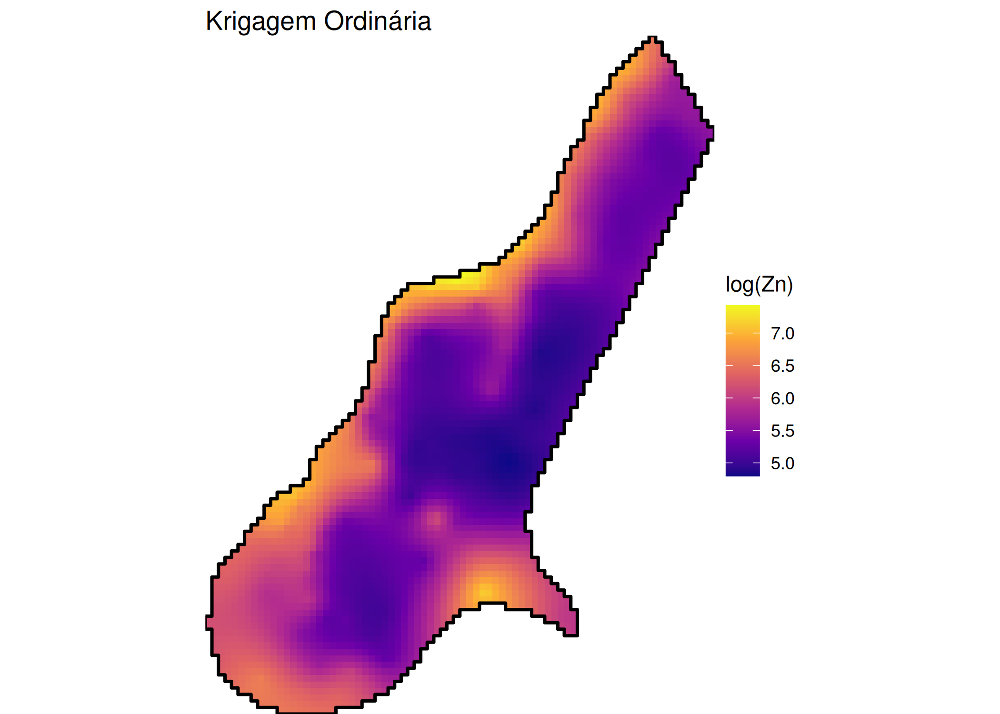
Validação Cruzada:krige.cv
Para aferir a qualidade preditiva do modelo, utiliza-se a função krige.cv. Esta função executa o procedimento leave-one-out (ou k-fold), que remove um ponto, estima-o com os vizinhos, compara o real com o estimado, repete para todos.
A Krigagem suaviza a realidade. Para aplicações que exigem a reprodução da textura real da variabilidade (ex: fluxo em meios porosos, análise de risco ambiental), utiliza-se simulação.
Basta adicionar o argumento nsim e definir nmax (para Simulação Sequencial Gaussiana local).
Código
# nsim = 4 gera quatro mapas possíveis da realidadesimulacoes <-krige(log(zinc) ~1, locations = meuse_sf, newdata = grid_stars, model = modelo_ajustado, nsim =4, nmax =30, debug.level =0)dados_df <-as.data.frame(merge(simulacoes))ggplot() +geom_stars(data =merge(simulacoes)) +geom_contour(data=dados_df,aes(x=x, y=y,z=var1),color="white",size=0.2,alpha=0.5)+#linhas de contorno (isolines)facet_wrap(~attributes) +geom_sf(data = limite_sf, fill =NA, color ="black", size =0.5) +scale_fill_viridis_c(option ="inferno", name ="log(Zn)", na.value ="transparent") +theme_minimal() +labs(title ="Simulação com Curvas de Nível")+theme(axis.title =element_blank())
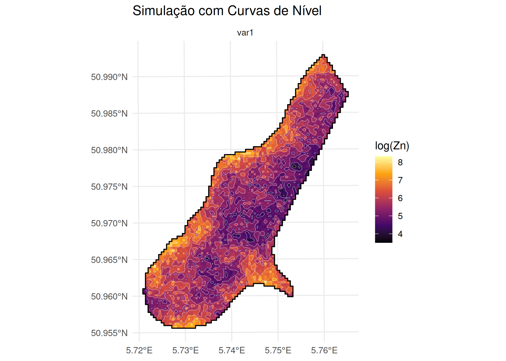
Figura 3.27: Cenários equiprováveis (Realizações)
3.19 Pacote automap
Enquanto no pacote gstat o usuário deve fornecer estimativas iniciais (chutes) para os parâmetros do variograma (patamar, alcance e efeito pepita) e testar manualmente diferentes funções de covariância (Esférico, Exponencial, Matérn, etc.), o pacote automap foi desenvolvido para automatizar essas etapas de ajuste e krigagem.
Baseado na metodologia descrita por Hiemstra et al. (2008), o pacote é ideal para situações onde se deseja realizar interpolação espacial sem a necessidade de definir manualmente os parâmetros iniciais, ou quando é necessário processar múltiplos conjuntos de dados em lote. O pacote estima os valores iniciais a partir dos dados e itera sobre diferentes modelos para encontrar o melhor ajuste baseado na menor soma dos quadrados dos resíduos.
Ajuste Automático do Variograma: autofitVariogram
Esta função elimina a necessidade de tentativa e erro manual. Ao contrário da função fit.variogram do gstat, que exige parâmetros iniciais, a autofitVariogram calcula esses valores automaticamente: o alcance inicial é definido como 0,10 vezes a diagonal da área dos dados (bounding box), o efeito pepita inicial é o mínimo da semivariância amostral, e o patamar é uma média entre o máximo e a mediana da semivariância . O algoritmo então ajusta e testa automaticamente os modelos Esférico, Exponencial, Gaussiano e Stein (Matérn), retornando aquele com o melhor ajuste estatístico . No canto inferior direito mostra o modelo ajustado e respetivos parâmetros.
A função autoKrige é chama internamente a autofitVariogram para ajustar o modelo e, em seguida, utiliza esse modelo otimizado para realizar a predição espacial nos novos locais . Isso resolve o problema de ter que passar manualmente os parâmetros do variograma para a função de krigagem. Ela suporta Krigagem Ordinária (padrão), Universal (inserindo covariáveis na fórmula) e Krigagem de Bloco .
pacman::p_load(patchwork)resultado_sf <-st_as_sf(krigagem$krige_output)p1 <-ggplot(resultado_sf) +geom_sf(aes(fill = var1.pred), color =NA) +# color=NA é crucial aquiscale_fill_viridis_c(option ="plasma", name ="Log(Zn)") +labs(title ="Predição") +theme_void()+theme(plot.title =element_text(hjust =0.5))p2 <-ggplot(resultado_sf) +geom_sf(aes(fill =sqrt(var1.var)), color =NA) +scale_fill_viridis_c(option ="cividis", name ="SD") +labs(title ="Erro Padrão") +theme_minimal()+theme(plot.title =element_text(hjust =0.5))p1 + p2
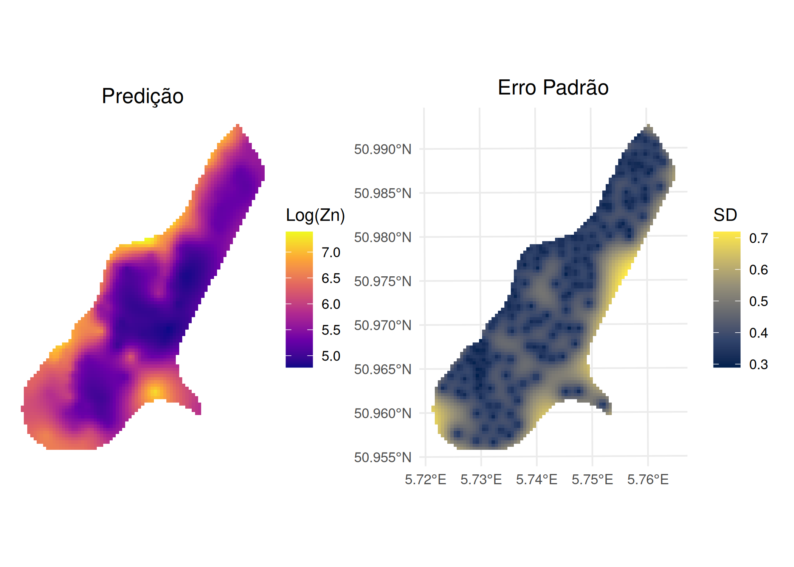
Validação Cruzada Automática: autoKrige.cv
Para garantir que a automação não comprometeu a qualidade da predição, a função autoKrige.cv realiza a validação cruzada. Ela ajusta o variograma automaticamente e aplica a validação (leave-one-out ou k-fold) usando a função krige.cv do gstat. Isso permite verificar rapidamente se a estratégia automática está gerando resíduos aceitáveis sem a necessidade de configurar loops manuais de validação.
Para avaliar a qualidade do modelo ajustado automaticamente, utiliza-se a autoKrige.cv. Esta função ajusta o variograma aos dados e, em seguida, utiliza a função krige.cv do gstat para realizar a validação cruzada (cross-validation)7. Ela suporta tanto o método leave-one-out quanto o k-fold (validar subconjuntos de dados) através do argumento nfold8.
Código
# Validação cruzada automática (10-fold) para KOcv_ordinaria <-autoKrige.cv(log(zinc) ~1,input_data =as(meuse_sf, "Spatial"),nfold =10)# Validação cruzada automática para Krigagem Universal (usando distância como covariável)cv_universal <-autoKrige.cv(log(zinc) ~sqrt(dist),input_data =as(meuse_sf, "Spatial"),nfold =10, debug.level =0)# Resumo dos resíduossummary(cv_ordinaria$krige.cv_output)
Object of class SpatialPointsDataFrame
Coordinates:
min max
coords.x1 178605 181390
coords.x2 329714 333611
Is projected: TRUE
proj4string :
[+proj=sterea +lat_0=52.1561605555556 +lon_0=5.38763888888889
+k=0.9999079 +x_0=155000 +y_0=463000 +ellps=bessel +units=m +no_defs]
Number of points: 155
Data attributes:
var1.pred var1.var observed residual
Min. :4.891 Min. :0.1151 Min. :4.727 Min. :-0.969586
1st Qu.:5.369 1st Qu.:0.1564 1st Qu.:5.288 1st Qu.:-0.199327
Median :5.862 Median :0.1808 Median :5.787 Median :-0.002832
Mean :5.882 Mean :0.1895 Mean :5.886 Mean : 0.004181
3rd Qu.:6.347 3rd Qu.:0.2017 3rd Qu.:6.514 3rd Qu.: 0.218404
Max. :7.265 Max. :0.5400 Max. :7.517 Max. : 1.387144
zscore fold
Min. :-2.251356 Min. : 1.000
1st Qu.:-0.467268 1st Qu.: 4.000
Median :-0.006538 Median : 6.000
Mean : 0.010897 Mean : 5.768
3rd Qu.: 0.515972 3rd Qu.: 8.000
Max. : 3.108253 Max. :10.000
Comparação de Modelos: compare.cv
Dado que a escolha entre Krigagem Ordinária e Universal pode ser difícil, a função compare.cv permite comparar diretamente os resultados de múltiplas validações cruzadas. Ela gera diagnósticos estatísticos (como RMSE e Correlação) e gráficos espaciais de bolhas (bubble plots) para identificar visualmente qual abordagem automática produziu menores erros. O argumento plot.diff destaca onde um modelo supera o outro.
Código
comparacao <-compare.cv(cv_ordinaria, cv_universal,col.names =c("Ordinária", "Universal"),bubbleplots =TRUE, # Gera os gráficos na janela de plotagemplot.diff =FALSE)
Intervalos de Predição de Posição: posPredictionInterval
Esta função oferece uma ferramenta prática para tomada de decisão baseada na incerteza da krigagem automática. Ela calcula a posição do intervalo de predição (padrão 95%) em relação a um valor limite (cutoff). O mapa resultante classifica as áreas como potencialmente acima, potencialmente abaixo ou indistinguível do limite, facilitando a interpretação de riscos sem exigir cálculos manuais de intervalos de confiança.
Código
#Extrair os resultados da krigagem e remover NAresultado_pontos <-st_as_sf(krigagem$krige_output, as_points =TRUE)resultado_limpo <- resultado_pontos[!is.na(resultado_pontos$var1.pred), ]krigagem_pontos <- krigagemkrigagem_pontos$krige_output <- resultado_limpointervalos <-posPredictionInterval(krigagem_pontos, p =95, value =6.0)plot(intervalos, main ="Classificação vs Limiar (6.0)")
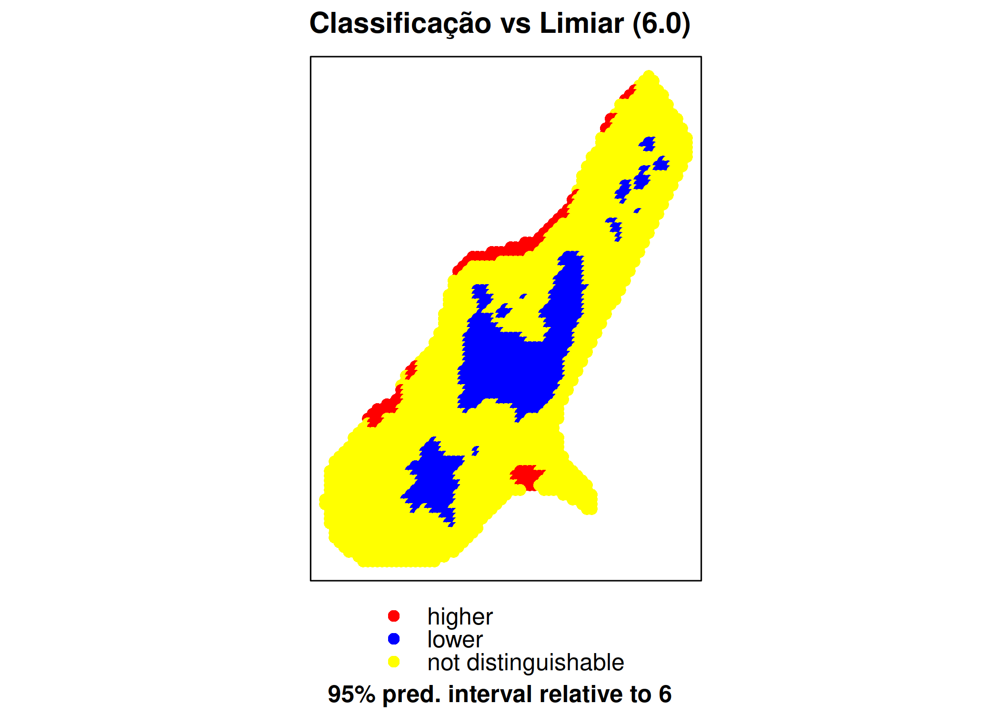
Figura 3.28: Áreas estatisticamente acima ou abaixo do limiar (Log(Zn) = 6.0)
Abdulah, Sameh, Yuxiao Li, Jian Cao, Hatem Ltaief, David E Keyes, Marc G Genton, e Ying Sun. 2023. “Large-scale environmental data science with ExaGeoStatR”. Environmetrics 34 (1): e2770.
Bakka, Haakon, Håvard Rue, Geir-Arne Fuglstad, Andrea Riebler, David Bolin, Janine Illian, Elias Krainski, Daniel Simpson, e Finn Lindgren. 2018. “Spatial modeling with R-INLA: A review”. Wiley Interdisciplinary Reviews: Computational Statistics 10 (6): e1443.
Banerjee, Sudipto, Bradley P Carlin, e Alan E Gelfand. 2003. Hierarchical modeling and analysis for spatial data. Chapman; Hall/CRC.
Carvalho, Dhaniel, e CV Deutsch. 2017. “An overview of multiple indicator kriging”. Geostatistics Lessons 7.
Chiles, Jean-Paul, e Pierre Delfiner. 2012. Geostatistics: modeling spatial uncertainty. John Wiley & Sons.
Cressie, Noel. 1985. “Fitting variogram models by weighted least squares”. Journal of the international Association for mathematical Geology 17 (5): 563–86.
———. 1989. “Geostatistics”. The American Statistician 43 (4): 197–202.
———. 1990. “The origins of kriging”. Mathematical geology 22 (3): 239–52.
———. 1991. “Geostatistical analysis of spatial data”. Spatial statistics and digital image analysis 1991: 87–108.
———. 1993. Statistics for spatial data. John Wiley & Sons.
Cressie, Noel, e Douglas M Hawkins. 1980. “Robust estimation of the variogram: I”. Journal of the international Association for Mathematical Geology 12 (2): 115–25.
Cressie, Noel, e Matthew T Moores. 2022. “Spatial statistics”. Em Encyclopedia of mathematical geosciences, 1–11. Springer.
Cressie, Noel, Matthew Sainsbury-Dale, e Andrew Zammit-Mangion. 2022. “Basis-function models in spatial statistics”. Annual Review of Statistics and Its Application 9 (1): 373–400.
Cressie, Noel, e Andrew Zammit-Mangion. 2016. “Multivariate spatial covariance models: a conditional approach”. Biometrika 103 (4): 915–35.
Deutsch, Clayton V., e André G. Journel. 1997. GSLIB: Geostatistical Software Library and User’s Guide. 2º ed. New York: Oxford University Press.
Diggle, Peter J, Jonathan A Tawn, e Rana A Moyeed. 1998. “Model-based geostatistics”. Journal of the Royal Statistical Society Series C: Applied Statistics 47 (3): 299–350.
Ecker, Mark D. 2003. “Geostatistics: past, present and future”. Encyclopedia of Life Support Systems (EOLSS), 50614–506.
Genton, Marc G. 1998. “Variogram fitting by generalized least squares using an explicit formula for the covariance structure”. Mathematical Geology 30 (4): 323–45.
Goovaerts, Pierre. 1997. Geostatistics for natural resources evaluation. Oxford university press.
Gorsich, David J, e Marc G Genton. 2000. “Variogram model selection via nonparametric derivative estimation”. Mathematical geology 32 (3): 249–70.
Gräler, Benedikt, Edzer Pebesma, e Gerard Heuvelink. 2016. “Spatio-temporal interpolation using gstat”.
Guimaraes, Ricardo JPS, Corina C Freitas, Luciano V Dutra, Carlos A Felgueiras, Sandra C Drummond, Sandra HC Tibiriçá, Guilherme Oliveira, e Omar S Carvalho. 2012. “Use of indicator kriging to investigate schistosomiasis in minas gerais state, Brazil”. Journal of Tropical Medicine 2012 (1): 837428.
Guttorp, Peter, e Tilmann Gneiting. 2006. “Studies in the history of probability and statistics XLIX on the Matérn correlation family”. Biometrika 93 (4): 989–95.
Harville, David A. 1977. “Maximum likelihood approaches to variance component estimation and to related problems”. Journal of the American statistical association 72 (358): 320–38.
Hiemstra, P. H., E. J. Pebesma, C. J. W. Twenh"ofel, e G. B. M. Heuvelink. 2008. “Real-time automatic interpolation of ambient gamma dose rates from the Dutch Radioactivity Monitoring Network”. Computers & Geosciences.
Hill, Donna. 1998. “Comparison of median indicator kriging with full indicator kriging in the analysis of spatial data”.
Isaaks, Edward H, R Mohan Srivastava, et al. 1989. “Applied geostatistics”.
Ji, Guangjun, Zizhao Cai, Keyan Xiao, Yan Lu, e Qian Wang. 2025. “Ordered Indicator Kriging Interpolation Method with Field Variogram Parameters for Discrete Variables in the Aquifers of Quaternary Loose Sediments”. Water 17 (21): 3116.
Journel, Andre G. 1986. “Constrained interpolation and qualitative information—the soft kriging approach”. Mathematical Geology 18 (3): 269–86.
Journel, Andre G, e Charles J Huijbregts. 1976. “Mining geostatistics”.
Journel, André G. 1983. “Nonparametric estimation of spatial distributions”. Journal of the International Association for Mathematical Geology 15 (3): 445–68.
Juang, Kai-Wei, e Dar-Yuan Lee. 1998. “Simple indicator kriging for estimating the probability of incorrectly delineating hazardous areas in a contaminated site”. Environmental Science & Technology 32 (17): 2487–93.
Krige, Danie, e Wynand Kleingeld. 2005. “The genesis of geostatistics in gold and diamond industries”. Em Space, Structure and Randomness: Contributions in Honor of Georges Matheron in the Field of Geostatistics, Random Sets and Mathematical Morphology, 5–16. Springer.
Lark, RM. 2000. “Estimating variograms of soil properties by the method-of-moments and maximum likelihood”. European Journal of Soil Science 51 (4): 717–28.
Laslett, Geoffrey M. 1994. “Kriging and splines: an empirical comparison of their predictive performance in some applications”. Journal of the American Statistical Association 89 (426): 391–400.
Lindgren, Finn, David Bolin, e Håvard Rue. 2022. “The SPDE approach for Gaussian and non-Gaussian fields: 10 years and still running”. Spatial Statistics 50: 100599.
Lindgren, Finn, e Håvard Rue. 2015. “Bayesian spatial modelling with R-INLA”. Journal of statistical software 63: 1–25.
Lindgren, Finn, Håvard Rue, e Johan Lindström. 2011. “An explicit link between Gaussian fields and Gaussian Markov random fields: the stochastic partial differential equation approach”. Journal of the Royal Statistical Society Series B: Statistical Methodology 73 (4): 423–98.
Marchant, BP, e RM Lark. 2007. “Robust estimation of the variogram by residual maximum likelihood”. Geoderma 140 (1-2): 62–72.
Matheron, G. 1963. “" Principles of geostatistics", Economic Geology, 58, pp 1246-1266”.
Matheron, George. 1971. “The theory of regionalised variables and its applications”. Les Cahiers du Centre de Morphologie Mathématique 5: 212.
McBratney, AB, e R Webster. 1986. “Choosing functions for semi-variograms of soil properties and fitting them to sampling estimates”. Journal of soil Science 37 (4): 617–39.
Mohammadpour, Mahyadin, Abbas Bahroudi, Maysam Abedi, Gholamreza Rahimipour, Golnaz Jozanikohan, e Farzaneh Mami Khalifani. 2019. “Geochemical distribution mapping by combining number-size multifractal model and multiple indicator kriging”. Journal of Geochemical Exploration 200: 13–26.
Myers, Donald E. 1994. “Spatial interpolation: an overview”. Geoderma 62 (1-3): 17–28.
Nhancololo, A. M., Wélson A. Oliveira, Fernandes A. C. Pereira, Bruno Montoani Silva, e João Domingos Scalon. 2024. “Comparison between the laboratory method and the Stolf penetrometer in soil density analysis: a study using geostatistical approaches”. Sigmae 13 (1): 63–78. https://doi.org/10.29327/2520355.13.1-7.
Oliver, MA, e R Webster. 2014. “A tutorial guide to geostatistics: Computing and modelling variograms and kriging”. Catena 113: 56–69.
Pebesma, Edzer J. 2004. “Multivariable geostatistics in S: the gstat package”. Computers & geosciences 30 (7): 683–91.
Ribeiro Jr, Paulo J, e Peter J Diggle. 2006. “geoR: Package for Geostatistical Data Analysis an illustrative session”. Artificial Intelligence 1: 1–24.
Richardson, Alice M, e Alan H Welsh. 1995. “Robust restricted maximum likelihood in mixed linear models”. Biometrics, 1429–39.
Sahu, Sujit. 2022. Bayesian modeling of spatio-temporal data with R. Chapman; Hall/CRC.
Scalon, João Domingos. 2024. Análise de Dados Espaciais com Aplicações em R. Lavras: Ed. UFLA.
Ungaro, F, F Ragazzi, R Cappellin, e P Giandon. 2008. “Arsenic concentration in the soils of the Brenta Plain (Northern Italy): mapping the probability of exceeding contamination thresholds”. Journal of Geochemical Exploration 96 (2-3): 117–31.
Ver Hoef, Jay M, e Ronald Paul Barry. 1998. “Constructing and fitting models for cokriging and multivariable spatial prediction”. Journal of Statistical Planning and Inference 69 (2): 275–94.
Wackernagel, Hans. 2003. Multivariate geostatistics: an introduction with applications. Springer Science & Business Media.
Whittle, Peter. 1954. “On stationary processes in the plane”. Biometrika, 434–49.
Yamamoto, Jorge Kazuo, e Paulo M. Barbosa Landim. 2013. Geoestatística: conceitos e aplicações. São Paulo: Oficina de Textos.